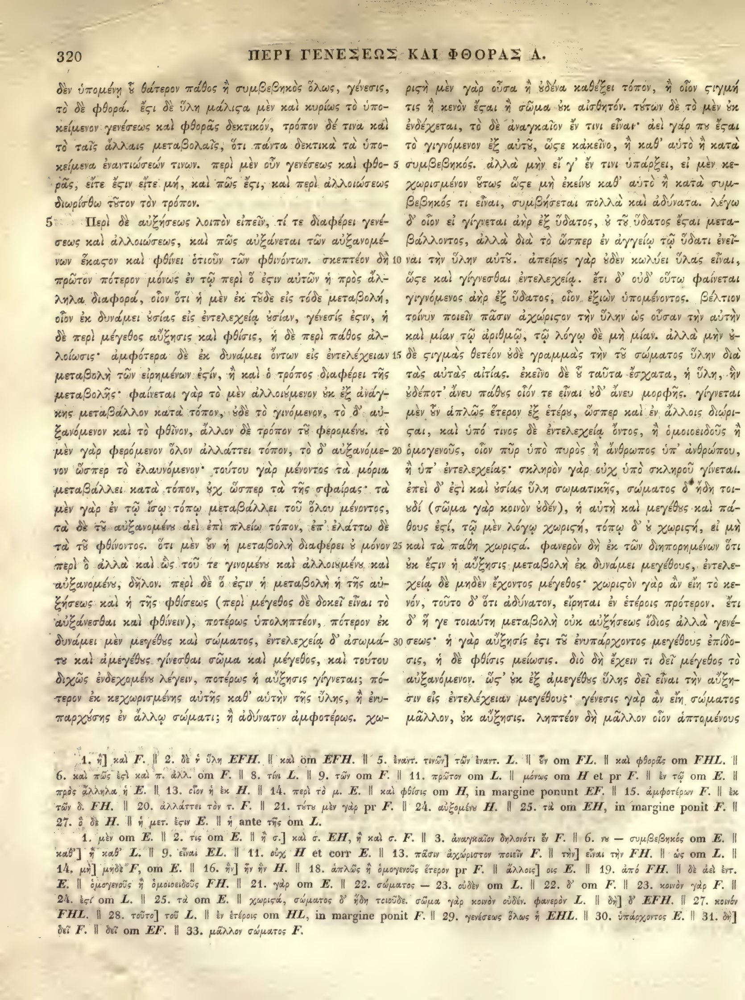

320a
| 1 | δὲν ὑπομένῃ <choice resp="#Mugler1966"><sic>ἢ</sic><corr>οὗ</corr></choice> θάτερον πάθος ἢ συμβεβηκὸς ὅλως, γένεσις | 0.90 |
|---|---|---|
| 2 | τὸ δὲ φθορά. <choice resp="#hathiTrustOCR"><sic>ἔστι</sic><corr>ἔτι</corr></choice> δὲ ὕλη <choice resp="#hathiTrustOCR"><sic>μάλιςα</sic><corr>μάλιστα</corr></choice> μὲν καὶ κυρίως τὸ ὑπο- | 0.90 |
| 3 | κείμενον γενέσεως καὶ φθορᾶς δεκτικόν, τρόπον δέ τινα καὶ | 0.90 |
| 4 | τὸ ταῖς ἄλλαις μεταβολαῖς, ὅτι πάντα δεκτικὰ τὰ ὑπο- | 0.90 |
| 5 | κείμενα ἐναντιώσεών τινων. περὶ μὲν οὖν γενέσεως καὶ φθο- | 0.90 |
| 6 | ρᾶς, εἴτε <choice resp="#hathiTrustOCR"><sic>ἔςιν</sic><corr>ἔστιν</corr></choice> εἴτε μή, καὶ πῶς <choice resp="#hathiTrustOCR"><sic>ἔςι</sic><corr>ἔστι</corr></choice>, καὶ περὶ ἀλλοιώσεως | 0.90 |
| 7 | διωρίσθω <choice resp="#hathiTrustOCR"><sic>τὸν τρόπον</sic><corr>τᾶτον τὸν τρόπον</corr></choice>. | 0.90 |
| Book 1, chapter 5 | ||
| 8 | Περὶ δὲ αὐξήσεως λοιπὸν εἰπεῖν, τί τε διαφέρει γενέ- | 0.90 |
| 9 | σεως καὶ ἀλλοιώσεως, καὶ πῶς <choice resp="#Mugler1966"><sic>αὔξεται</sic><corr>αὐξάνεται</corr></choice> τῶν αὐξανομέ- | 0.90 |
| 10 | νων ἕκαστον καὶ φθίνει ὁτιοῦν τῶν φθινόντων. <choice resp="#hathiTrustOCR"><sic>σκεπτέον δ’</sic><corr>σκεπτέον δὴ</corr></choice> | 0.90 |
| 11 | πρῶτον πότερον μόνως ἐν τῷ περὶ ὃ <choice resp="#hathiTrustOCR"><sic>ἔστιν</sic><corr>ἔσιν</corr></choice> αὐτῶν ἡ πρὸς ἄλ- | 0.90 |
| 12 | ληλα διαφορά, οἷον ὅτι ἡ μὲν ἐκ <choice resp="#hathiTrustOCR"><sic>τῆσδε</sic><corr>τόδε</corr></choice> εἰς τόδε μεταβολή, | 0.90 |
| 13 | οἷον ἐκ δυνάμει οὐσίας εἰς ἐντελεχείᾳ οὐσίαν, γένεσίς <choice resp="#hathiTrustOCR"><sic>ἐστιν</sic><corr>ἐσιν</corr></choice>, | 0.90 |
| 14 | ἡ δὲ περὶ μέγεθος αὔξησις καὶ φθίσις, ἡ δὲ περὶ πάθος ἀλ- | 0.90 |
| 15 | λοίωσις· ἀμφότερα δὲ ἐκ δυνάμει ὄντων εἰς ἐντελέχειαν | 0.90 |
| 16 | μεταβολὴ τῶν εἰρημένων <choice resp="#hathiTrustOCR"><sic>ἐςίν</sic><corr>ἐστίν</corr></choice>, ἢ καὶ ὁ τρόπος διαφέρει τῆς | 0.90 |
| 17 | μεταβολῆς· φαίνεται γὰρ τὸ μὲν ἀλλοιούμενον <choice resp="#hathiTrustOCR"><sic>ἐν ἐξ</sic><corr>ἐκ ἐξ</corr></choice> ἀνάγ- | 0.90 |
| 18 | κης μεταβάλλον κατὰ τόπον, οὐδὲ τὸ γινόμενον, <choice resp="#hathiTrustOCR"><sic>τὸ δ’ αὑ-</sic><corr>τὸ δ’ αὐ-</corr></choice> | 0.90 |
| 19 | ξανόμενον καὶ τὸ φθῖνον, ἄλλον δέ τρόπον <choice resp="#Mugler1966"><sic>τῷ</sic><corr>τοῦ</corr></choice> <choice resp="#Mugler1966"><sic>φερομένῳ</sic><corr>φερομένου</corr></choice>. τὸ | 0.90 |
| 20 | μὲν γὰρ φερόμενον ὅλον ἀλλάττει τόπον, τὸ δ’ αὐξανόμε- | 0.90 |
| 21 | νον ὥσπερ τὸ ἐλαυνόμενον· τούτου γὰρ μένοντος τὰ μόρια | 0.90 |
| 22 | μεταβάλλει κατὰ τόπον, ὥσπερ τὰ τῆς σφαίρας· τὰ | 0.90 |
| 23 | μὲν γὰρ ἐν τῷ ἴσῳ τόπῳ μεταβάλλει τοῦ ὅλου μένοντος, | 0.90 |
| 24 | τὰ δὲ <choice resp="#Mugler1966"><sic>τῷ</sic><corr>τοῦ</corr></choice> <choice resp="#Mugler1966"><sic>αὐξανομένῳ</sic><corr>αὐξανομένου</corr></choice> ἀεὶ ἐπὶ πλείω τόπον, ἐπ’ ἐλάττω δὲ | 0.90 |
| 25 | τὰ τοῦ φθίνοντος. <choice resp="#hathiTrustOCR"><sic>ὅτι μὲν οὖν</sic><corr>ὅτι μὲν ἐν</corr></choice> ἡ μεταβολὴ διαφέρει ὁ μονα- | 0.90 |
| 26 | χῶς, δῆλον. περὶ δὲ ὃ ἔστιν ἡ μεταβολὴ ἡ τῆς αὐ- | 0.90 |
| 27 | ξήσεως καὶ ἡ τῆς φθίσεως (περὶ μέγεθος δὲ δοκεῖ εἶναι τὸ | 0.90 |
| 28 | <choice resp="#Mugler1966"><sic>αὔξεσθαι</sic><corr>αὐξάνεσθαι</corr></choice> καὶ φθίνειν), <choice resp="#hathiTrustOCR"><sic>πότερον ὑποληπτέον, πότερον</sic><corr>ποτέρως ὑποληπτέον, πότερον</corr></choice> ἐκ | 0.90 |
| 29 | δυνάμει μὲν <choice resp="#Mugler1966"><sic>μέγεθος</sic><corr>μεγέθους</corr></choice> καὶ <choice resp="#hathiTrustOCR"><sic>σώματος</sic><corr>μεγέθους</corr></choice>, ἐντελεχείᾳ δ’ ἀσώμα- | 0.90 |
| 30 | τε καὶ <choice resp="#hathiTrustOCR"><sic>ἀμεγέθες</sic><corr>ἀμεγέθους</corr></choice> γίνεσθαι σῶμα καὶ μέγεθος, καὶ <choice resp="#Mugler1966"><sic>τοῦτο</sic><corr>τούτου</corr></choice> | 0.90 |
| 31 | διχῶς <choice resp="#hathiTrustOCR"><sic>ἐνδεχομένως</sic><corr>ἐνδεχομένω</corr></choice> λέγειν, <choice resp="#Mugler1966"><sic>πότερον</sic><corr>ποτέρως</corr></choice> ἡ αὔξησις <choice resp="#hathiTrustOCR"><sic>γίνεται</sic><corr>γίγνεται</corr></choice>; πό- | 0.90 |
| 32 | τερον ἐκ κεχωρισμένης αὐτῆς καθ’ αὑτὴν τῆς ὕλης, ἢ ἐνυ- | 0.90 |
| 33 | παρχούσης ἐν ἄλλῳ σώματι; ἢ ἀδύνατον ἀμφοτέρως. χω- | 0.90 |
320b
| 1 | μεσις, ῥισὴ μὲν οὖσα ἡ οὐδὲνα καθέξει τόπον, ἢ οἷον σιγμ- | 0.85 |
|---|---|---|
| 2 | τις ἢ κενὸν ἔσται <choice resp="#Mugler1966"><sic>ἢ</sic><corr>καὶ</corr></choice> σῶμα οὐκ αἰσθητόν. τούτων δὲ τὸ μὲν ἐν- | 0.85 |
| 3 | δέχεται, τὸ δὲ ἀναγκαῖον ἔν τινι εἶναι· ἀεὶ γάρ πνι ἔσ- | 0.80 |
| 4 | τὸ γιγνόμενον ἐξ <choice resp="#Mugler1966"><sic>αὐτῶ</sic><corr>αὐτοῦ</corr></choice>, ὥσε κἀκεῖνο, ἢ καθ’ αὑτὸ ἢ κατὰ | 0.80 |
| 5 | συμβεβηκός. ἀλλὰ μὴν εἰ γ’ ἔν τινι ὑπάρξει, εἰ μὲν κε- | 0.85 |
| 6 | χωρισμένον οὕτως ὥστε μὴ <choice resp="#Mugler1966"><sic>ἐκεῖνο</sic><corr>ἐκείνου</corr></choice> καθ’ αὑτὸ ἢ κατὰ συμ- | 0.85 |
| 7 | βεβηκός τι εἶναι, συμβήσεται πολλὰ καὶ ἀδύνατα. λέγω | 0.85 |
| 8 | δ’ οἷον εἰ <choice resp="#Mugler1966"><sic>γίγνεται</sic><corr>γίνεται</corr></choice> ἀὴρ ἐξ ὕδατος, <choice resp="#Mugler1966"><sic>ὁ</sic><corr>οὐ</corr></choice> <choice resp="#Mugler1966"><sic>τῶ</sic><corr>τοῦ</corr></choice> ὕδατος ἔσται μετα- | 0.80 |
| 9 | βάλλοντος, ἀλλὰ διὰ τὸ ὥσπερ ἐν ἀγγείω τῶ ὕδατι ἐνεῖ- | 0.80 |
| 10 | ναι τὴν ὕλην <choice resp="#Mugler1966"><sic>αὐτῶ</sic><corr>αὐτοῦ</corr></choice>. <choice resp="#Mugler1966"><sic>ἀπείρως</sic><corr>Ἀπείρους</corr></choice> γὰρ οὐδὲν κωλύει ὕλας εἶναι | 0.80 |
| 11 | <choice resp="#Mugler1966"><sic>ὥσε</sic><corr>ὥστε</corr></choice> καὶ <choice resp="#Mugler1966"><sic>γίγνεσθαι</sic><corr>γίνεσθαι</corr></choice> ἐντελεχείᾳ. ἔτι δ’ οὐδ’ οὕτω φαίνετα- | 0.80 |
| 12 | γιγνόμενος ἀὴρ ἐξ ὕδατος, οἷον ἐξιὼν ὑπομένοντος. βέλτι- | 0.80 |
| 13 | τοίνυν ποιεῖν πᾶσιν ἀχώριστον τὴν ὕλην ὡς οὖσαν τὴν αὐτὴ- | 0.80 |
| 14 | καὶ μίαν τῶ ἀριθμῶ, τῶ λόγω δὲ μὴ μίαν. ἀλλὰ μὴν | 0.80 |
| 15 | δὲ σιγμὰς θετέον οὐδὲ γραμμὰς τὴν <choice resp="#Mugler1966"><sic>τῶ</sic><corr>τοῦ</corr></choice> σώματος ὕλην δι- | 0.80 |
| 16 | τὰς αὐτὰς αἰτίας. ἐκεῖνο δὲ <choice resp="#Mugler1966"><sic>ὃ</sic><corr>οὗ</corr></choice> ταῦτα ἔσχατα, ἡ ὕλη, ἡ | 0.80 |
| 17 | ἀδύνατ’ ἄνευ πάθους οἷόν τε εἶναι οὐδ’ ἄνευ μορφῆς. γίγνετα- | 0.80 |
| 18 | μὲν ἂν ἁπλῶς ἕτερον ἐξ <choice resp="#Mugler1966"><sic>ἑτέρας</sic><corr>ἑτέρου</corr></choice>, ὥσπερ καὶ ἐν ἄλλοις διώρι- | 0.80 |
| 19 | σαι, καὶ ὑπό τινος δὲ ἐντελεχείᾳ ὄντος, ἢ ὁμοιοειδοῦς | 0.80 |
| 20 | ὁμογενοῦς, οἷον πῦρ ὑπὸ πυρὸς ἢ ἄνθρωπος ὑπ’ ἀνθρώπου | 0.80 |
| 21 | ἢ ὑπ’ ἐντελεχείας· σκληρὸν γὰρ οὐχ ὑπὸ σκληροῦ γίνετα- | 0.80 |
| 22 | ἐπεὶ δ’ ἐστὶ καὶ ὕλης σωματικῆς, σώματος ὁ ἤδη το- | 0.80 |
| 23 | ῥὶ (σῶμα γὰρ κοινὸν οὐδέν), ἡ αὐτὴ καὶ <choice resp="#Mugler1966"><sic>μέγεθος</sic><corr>μεγέθους</corr></choice> καὶ πά- | 0.80 |
| 24 | θους ἐστί, τῶ μὲν λόγω χωριστή, τόπω δ’ οὐ χωριστή, εἰ μ- | 0.80 |
| 25 | μόνον καὶ τὰ πάθη <choice resp="#hathiTrustOCR"><sic>χωριςά</sic><corr>χωριστά</corr></choice>. φανερὸν δὴ ἐκ τῶν διηπορημένων ὅτ- | 0.80 |
| 26 | οὐκ <choice resp="#hathiTrustOCR"><sic>ἔςιν</sic><corr>ἔστιν</corr></choice> ἡ αὔξησις μεταβολὴ ἐκ δυνάμει μεγέθους, ἐντελε- | 0.80 |
| 27 | χείᾳ δὲ μηδὲν ἔχοντος μέγεθος· <choice resp="#hathiTrustOCR"><sic>χωριςὸν</sic><corr>χωριστὸν</corr></choice> γὰρ ἂν εἴη τὸ κε- | 0.80 |
| 28 | νόν, τοῦτο δ’ ὅτι ἀδύνατον, εἴρηται ἐν ἑτέροις πρότερον. ἔ- | 0.80 |
| 29 | δ’ ἤ γε τοιαύτη μεταβολὴ οὐκ αὐξήσεως ἴδιος ἀλλὰ γενέ- | 0.80 |
| 30 | σεως· ἡ γὰρ αὔξησίς <choice resp="#hathiTrustOCR"><sic>ἐςι</sic><corr>ἐστι</corr></choice> <choice resp="#Mugler1966"><sic>τῶ</sic><corr>τοῦ</corr></choice> ἐνυπάρχοντος μεγέθους ἐπίδο- | 0.80 |
| 31 | σις, ἡ δὲ φθίσις μείωσις. διὸ δὴ ἔχειν τι δεῖ μέγεθος τ- | 0.80 |
| 32 | αὐξανόμενον. ὡς ἐξ ἀμεγέθους ὕλης δεῖ εἶναι τὴν αὔξη- | 0.80 |
| 33 | σιν εἰς ἐντελέχειαν μεγέθους· <choice resp="#Mugler1966"><sic>γενέσεις</sic><corr>γένεσις</corr></choice> γὰρ ἂν εἴη σώματο- | 0.80 |
| 34 | μᾶλλον, ἐξ αὐξήσεως. ληπτέον δὴ μᾶλλον οἷον <choice resp="#Mugler1966"><sic>ἁπτομένου</sic><corr>ἁπτομένους</corr></choice> | 0.80 |
Textual apparatus
- n1 [both] 27. ὁ δὲ H. ‖ ἡ μετ. ἔσχ E. ‖ ἡ ante τῆς om L.
- n2 [both] 1. μὲν om E. ‖ 2. τις om E. ‖ ἡ σ.] καὶ σ. EH, ἡ καὶ σ. F. ‖ 3. ἀναγκαῖον δηλονότι ἐν F. ‖ 6. τι — συμβεβηκὸς om E.
- n3 [both] καθ’] ἡ καθ’ L. ‖ 9. εἶναι EL. ‖ 11. οὐχ H et corr E. ‖ 13. πᾶσιν ἀχώριστον ποιεῖν F. ‖ τὴν] εἶναι τὴν FH. ‖ ὡς om L.
- n4 [both] 14. μὴ] μηδὲ F, om E. ‖ 16. ἦν] ἦν ἦν H. ‖ 18. ἁπλῶς ἡ ὁμογενοῦς ἕτερον pr F. ‖ ἄλλοις] οις E. ‖ 19. ἀπὸ FH. ‖ δὲ ἀεὶ ἐντ.
- n5 [both] E. ‖ ὁμογενοῦς ἡ ὁμοιοειδοῦς FH. ‖ 21. γὰρ om E. ‖ 22. σώματος — 23. οὐδὲν om L. ‖ 22. δ’ om F. ‖ 23. κοινὸν γὰρ F.
- n6 [both] 24. ἐστὶ om L. ‖ 25. τὰ om E. ‖ χωριστά, σώματος δ’ ἤδη τιοσδὲ. σῶμα γὰρ κοινὸν οὐδέν. φανερὸν L. ‖ δὴ] δ’ EFH. ‖ 27. κινεῖ
- n7 [both] FHL. ‖ 28. τοῦτο] τοῦ L. ‖ ἐν ἑτέροις om HL, in margine ponit F. ‖ 29. γενέσεως ὅλως ἡ EHL. ‖ 30. ὑπάρχοντος E. ‖ 31. δὴ
- n8 [both] δεῖ F. ‖ δεῖ om EF. ‖ 33. μᾶλλον σώματος F.
Verifier issues
- No verifier or gutter-overlap issues.
All Greek-word differences from Mugler 1966 (97)
This inventory is exhaustive at the Greek-word level; it does not imply that either reading is an error.
- replace 319b33: μη δὲν ↔ μηδὲν (anchors: δὲ … ὑπομένῃ)
- replace 320a1: ἢ ↔ οὗ (anchors: ὑπομένῃ … θάτερον)
- orthographic_or_diacritic 320a2: ἔστι ↔ Ἐστὶ (anchors: φθορά … δὲ)
- orthographic_or_diacritic 320a5: περὶ ↔ Περὶ (anchors: τινων … μὲν)
- delete 320a5: καὶ φθορᾶς ↔ ∅ (anchors: γενέσεως … εἴτε)
- insert 320a7: ∅ ↔ τοῦτον (anchors: διωρίσθω … τὸν)
- replace 320a9: αὔξεται ↔ αὐξάνεται (anchors: πῶς … τῶν)
- orthographic_or_diacritic 320a10: σκεπτέον ↔ Σκεπτέον (anchors: φθινόντων … δ)
- replace 320a10: δ ↔ δὴ (anchors: σκεπτέον … πρῶτον)
- orthographic_or_diacritic 320a11: ὃ ↔ ὅ (anchors: περὶ … ἔστιν)
- orthographic_or_diacritic 320a11: ἔστιν ↔ ἐστιν (anchors: ὃ … αὐτῶν)
- replace 320a12: τῆσδε ↔ τοῦδε (anchors: ἐκ … εἰς)
- delete 320a14: καὶ φθίσις ↔ ∅ (anchors: αὔξησις … ἡ)
- replace 320a17: ἐν ↔ οὐκ (anchors: ἀλλοιούμενον … ἐξ)
- orthographic_or_diacritic 320a18: αὑξανόμενον ↔ αὐξανόμενον (anchors: δ … καὶ)
- orthographic_or_diacritic 320a19: δέ ↔ δὲ (anchors: ἄλλον … τρόπον)
- replace 320a19: τῷ φερομένῳ ↔ τοῦ φερομένου (anchors: τρόπον … τὸ)
- orthographic_or_diacritic 320a19: τὸ ↔ Τὸ (anchors: φερομένῳ … μὲν)
- insert 320a22: ∅ ↔ οὐχ (anchors: τόπον … ὥσπερ)
- replace 320a24: τῷ αὐξανομένῳ ↔ τοῦ αὐξανομένου (anchors: δὲ … ἀεὶ)
- orthographic_or_diacritic 320a25: ὅτι ↔ Ὅτι (anchors: φθίνοντος … μὲν)
- insert 320a25: ∅ ↔ οὐ μόνον περὶ (anchors: διαφέρει … ὁ)
- orthographic_or_diacritic 320a25: ὁ ↔ ὃ (anchors: διαφέρει … μοναχῶς)
- replace 320a25: μοναχῶς ↔ ἀλλὰ καὶ ὣς τοῦ τε γινομένου καὶ ἀλλοιουμένου καὶ αὐξανομένου (anchors: ὁ … δῆλον)
- orthographic_or_diacritic 320a26: περὶ ↔ Περὶ (anchors: δῆλον … δὲ)
- orthographic_or_diacritic 320a26: ὃ ↔ ὅ (anchors: δὲ … ἔστιν)
- orthographic_or_diacritic 320a26: ἔστιν ↔ ἐστιν (anchors: ὃ … ἡ)
- replace 320a28: αὔξεσθαι ↔ αὐξάνεσθαι (anchors: τὸ … καὶ)
- replace 320a28: πότερον ↔ ποτέρως (anchors: φθίνειν … ὑποληπτέον)
- replace 320a29: μέγεθος ↔ μεγέθους (anchors: μὲν … καὶ)
- replace 320a29: ἀσώματε ↔ ἀσωμάτου (anchors: δ … καὶ)
- replace 320a30: ἀμεγέθες ↔ ἀμεγέθους (anchors: καὶ … γίνεσθαι)
- replace 320a30: τοῦτο ↔ τούτου (anchors: καὶ … διχῶς)
- replace 320a31: ἐνδεχομένως ↔ ἐνδεχομένου (anchors: διχῶς … λέγειν)
- replace 320a31: πότερον ↔ ποτέρως (anchors: λέγειν … ἡ)
- replace 320a33: χω μεσις ῥισὴ ↔ Χωριστὴ (anchors: ἀμφοτέρως … μὲν)
- insert 320b1: ∅ ↔ γὰρ (anchors: μὲν … οὖσα)
- orthographic_or_diacritic 320b1: ἡ ↔ ἢ (anchors: οὖσα … οὐδὲνα)
- orthographic_or_diacritic 320b1: οὐδὲνα ↔ οὐδένα (anchors: ἡ … καθέξει)
- replace 320b1: σιγμτις ↔ στιγμή τις (anchors: οἷον … ἢ)
- replace 320b2: ἢ ↔ καὶ (anchors: ἔσται … σῶμα)
- orthographic_or_diacritic 320b2: τούτων ↔ Τούτων (anchors: αἰσθητόν … δὲ)
- insert 320b2: ∅ ↔ οὐκ (anchors: μὲν … ἐνδέχεται)
- replace 320b3: πνι ἔστὸ γιγνόμενον ↔ που ἔσται τὸ γινόμενον (anchors: γάρ … ἐξ)
- replace 320b4: αὐτῶ ὥσε ↔ αὐτοῦ ὥστε (anchors: ἐξ … κἀκεῖνο)
- orthographic_or_diacritic 320b5: ἀλλὰ ↔ Ἀλλὰ (anchors: συμβεβηκός … μὴν)
- orthographic_or_diacritic 320b5: εἰ ↔ εἴ (anchors: μὴν … γ)
- replace 320b6: ἐκεῖνο ↔ ἐκείνου (anchors: μὴ … καθ)
- orthographic_or_diacritic 320b7: λέγω ↔ Λέγω (anchors: ἀδύνατα … δ)
- replace 320b8: γίγνεται ↔ γίνεται (anchors: εἰ … ἀὴρ)
- replace 320b8: ὁ τῶ ↔ οὐ τοῦ (anchors: ὕδατος … ὕδατος)
- orthographic_or_diacritic 320b9: ἀγγείω ↔ ἀγγείῳ (anchors: ἐν … τῶ)
- orthographic_or_diacritic 320b9: τῶ ↔ τῷ (anchors: ἀγγείω … ὕδατι)
- replace 320b10: αὐτῶ ἀπείρως ↔ αὐτοῦ Ἀπείρους (anchors: ὕλην … γὰρ)
- replace 320b11: ὥσε ↔ ὥστε (anchors: εἶναι … καὶ)
- replace 320b11: γίγνεσθαι ↔ γίνεσθαι (anchors: καὶ … ἐντελεχείᾳ)
- orthographic_or_diacritic 320b11: ἔτι ↔ Ἔτι (anchors: ἐντελεχείᾳ … δ)
- replace 320b11: φαίνεταγιγνόμενος ↔ φαίνεται γινόμενος (anchors: οὕτω … ἀὴρ)
- replace 320b12: βέλτιτοίνυν ↔ Βέλτιον τοίνυν (anchors: ὑπομένοντος … ποιεῖν)
- replace 320b13: αὐτὴκαὶ ↔ αὐτὴν καὶ (anchors: τὴν … μίαν)
- orthographic_or_diacritic 320b14: τῶ ↔ τῷ (anchors: μίαν … ἀριθμῶ)
- orthographic_or_diacritic 320b14: ἀριθμῶ ↔ ἀριθμῷ (anchors: τῶ … τῶ)
- orthographic_or_diacritic 320b14: τῶ ↔ τῷ (anchors: ἀριθμῶ … λόγω)
- orthographic_or_diacritic 320b14: λόγω ↔ λόγῳ (anchors: τῶ … δὲ)
- orthographic_or_diacritic 320b14: ἀλλὰ ↔ Ἀλλὰ (anchors: μίαν … μὴν)
- replace 320b15: δὲ σιγμὰς ↔ οὐδὲ στιγμὰς (anchors: μὴν … θετέον)
- replace 320b15: τῶ ↔ τοῦ (anchors: τὴν … σώματος)
- replace 320b15: διτὰς ↔ διὰ τὰς (anchors: ὕλην … αὐτὰς)
- orthographic_or_diacritic 320b16: ἐκεῖνο ↔ Ἐκεῖνο (anchors: αἰτίας … δὲ)
- replace 320b16: ὃ ↔ οὗ (anchors: δὲ … ταῦτα)
- replace 320b16: ἡ ἀδύνατ ↔ ἣν οὐδέποτ (anchors: ὕλη … ἄνευ)
- replace 320b17: γίγνεταμὲν ἂν ↔ Γίνεται μὲν οὖν (anchors: μορφῆς … ἁπλῶς)
- replace 320b18: ἑτέρας ↔ ἑτέρου (anchors: ἐξ … ὥσπερ)
- replace 320b18: διώρισαι ↔ διώρισται (anchors: ἄλλοις … καὶ)
- insert 320b19: ∅ ↔ ἢ (anchors: ὁμοιοειδοῦς … ὁμογενοῦς)
- replace 320b21: γίνεταἐπεὶ ↔ γίνεται Ἐπεὶ (anchors: σκληροῦ … δ)
- replace 320b22: ὕλης ↔ οὐσίας ὕλη (anchors: καὶ … σωματικῆς)
- replace 320b22: ὁ ↔ δ (anchors: σώματος … ἤδη)
- replace 320b22: τοῥὶ ↔ τοιουδί (anchors: ἤδη … σῶμα)
- replace 320b23: μέγεθος ↔ μεγέθους (anchors: καὶ … καὶ)
- orthographic_or_diacritic 320b24: τῶ ↔ τῷ (anchors: ἐστί … μὲν)
- orthographic_or_diacritic 320b24: λόγω ↔ λόγῳ (anchors: μὲν … χωριστή)
- orthographic_or_diacritic 320b24: τόπω ↔ τόπῳ (anchors: χωριστή … δ)
- replace 320b24: μμόνον ↔ μὴ (anchors: εἰ … καὶ)
- orthographic_or_diacritic 320b25: φανερὸν ↔ Φανερὸν (anchors: χωριστά … δὴ)
- replace 320b25: ὅτοὐκ ↔ ὅτι οὐκ (anchors: διηπορημένων … ἔστιν)
- replace 320b28: ἔδ ↔ Ἔτι δ (anchors: πρότερον … ἤ)
- orthographic_or_diacritic 320b29: ἤ ↔ ἥ (anchors: ἔδ … γε)
- insert 320b29: ∅ ↔ ὅλως (anchors: γενέσεως … ἡ)
- orthographic_or_diacritic 320b30: ἡ ↔ Ἡ (anchors: γενέσεως … γὰρ)
- replace 320b30: τῶ ↔ τοῦ (anchors: ἐστι … ἐνυπάρχοντος)
- orthographic_or_diacritic 320b31: διὸ ↔ Διὸ (anchors: μείωσις … δὴ)
- replace 320b31: ταὐξανόμενον ὡς ↔ τὸ αὐξανόμενον ὥστ οὐκ (anchors: μέγεθος … ἐξ)
- replace 320b33: γενέσεις ↔ γένεσις (anchors: μεγέθους … γὰρ)
- replace 320b33: σώματομᾶλλον ἐξ αὐξήσεως ↔ σώματος μᾶλλον οὐκ αὔξησις (anchors: εἴη … ληπτέον)
- orthographic_or_diacritic 320b34: ληπτέον ↔ Ληπτέον (anchors: αὐξήσεως … δὴ)
- replace 320b34: ἁπτομένου ↔ ἁπτομένους (anchors: οἷον … τῆς)
Encoded TEI choices (49)
- a2
#hathiTrustOCR: <choice resp="#hathiTrustOCR"><sic>ἔστι</sic><corr>ἔτι</corr></choice> (0.95) — The scan clearly shows ἔτι (no sigma), while the extraction has ἔστι. - a7
#hathiTrustOCR: <choice resp="#hathiTrustOCR"><sic>τὸν τρόπον</sic><corr>τᾶτον τὸν τρόπον</corr></choice> (0.90) — The scan shows τᾶτον before τὸν τρόπον, which is missing in the extraction. - a10
#hathiTrustOCR: <choice resp="#hathiTrustOCR"><sic>σκεπτέον δ’</sic><corr>σκεπτέον δὴ</corr></choice> (0.90) — The scan shows δὴ, not δ’. - a11
#hathiTrustOCR: <choice resp="#hathiTrustOCR"><sic>ἔστιν</sic><corr>ἔσιν</corr></choice> (0.90) — The scan shows ἔσιν (no tau), while the extraction has ἔστιν. - a12
#hathiTrustOCR: <choice resp="#hathiTrustOCR"><sic>τῆσδε</sic><corr>τόδε</corr></choice> (0.90) — The scan shows τόδε, not τῆσδε. - a13
#hathiTrustOCR: <choice resp="#hathiTrustOCR"><sic>ἐστιν</sic><corr>ἐσιν</corr></choice> (0.90) — The scan shows ἐσιν (no tau), while the extraction has ἐστιν. - a17
#hathiTrustOCR: <choice resp="#hathiTrustOCR"><sic>ἐν ἐξ</sic><corr>ἐκ ἐξ</corr></choice> (0.90) — The scan shows ἐκ ἐξ, not ἐν ἐξ. - a18
#hathiTrustOCR: <choice resp="#hathiTrustOCR"><sic>τὸ δ’ αὑ-</sic><corr>τὸ δ’ αὐ-</corr></choice> (0.90) — The scan shows αὐ- (no rough breathing), while the extraction has αὑ-. - a25
#hathiTrustOCR: <choice resp="#hathiTrustOCR"><sic>ὅτι μὲν οὖν</sic><corr>ὅτι μὲν ἐν</corr></choice> (0.90) — The scan shows ἐν, not οὖν. - a28
#hathiTrustOCR: <choice resp="#hathiTrustOCR"><sic>πότερον ὑποληπτέον, πότερον</sic><corr>ποτέρως ὑποληπτέον, πότερον</corr></choice> (0.90) — The scan shows ποτέρως, not πότερον. - a29
#hathiTrustOCR: <choice resp="#hathiTrustOCR"><sic>σώματος</sic><corr>μεγέθους</corr></choice> (0.90) — The scan shows μεγέθους, not σώματος. - a30
#hathiTrustOCR: <choice resp="#hathiTrustOCR"><sic>ἀμεγέθες</sic><corr>ἀμεγέθους</corr></choice> (0.90) — The scan shows ἀμεγέθους, not ἀμεγέθες. - a31
#hathiTrustOCR: <choice resp="#hathiTrustOCR"><sic>ἐνδεχομένως</sic><corr>ἐνδεχομένω</corr></choice> (0.90) — The scan shows ἐνδεχομένω, not ἐνδεχομένως. - a31
#hathiTrustOCR: <choice resp="#hathiTrustOCR"><sic>γίνεται</sic><corr>γίγνεται</corr></choice> (0.90) — The scan shows γίγνεται, not γίνεται. - a2
#hathiTrustOCR: <choice resp="#hathiTrustOCR"><sic>μάλιςα</sic><corr>μάλιστα</corr></choice> (1.00) — Aligned Hathi στ-ligature OCR correction: deterministic repair of the Hathi internal final sigma agrees with the scan and reference crop. - a6
#hathiTrustOCR: <choice resp="#hathiTrustOCR"><sic>ἔςιν</sic><corr>ἔστιν</corr></choice> (1.00) — Aligned Hathi στ-ligature OCR correction: deterministic repair of the Hathi internal final sigma agrees with the scan and reference crop. - a6
#hathiTrustOCR: <choice resp="#hathiTrustOCR"><sic>ἔςι</sic><corr>ἔστι</corr></choice> (1.00) — Aligned Hathi στ-ligature OCR correction: deterministic repair of the Hathi internal final sigma agrees with the scan and reference crop. - a16
#hathiTrustOCR: <choice resp="#hathiTrustOCR"><sic>ἐςίν</sic><corr>ἐστίν</corr></choice> (1.00) — Aligned Hathi στ-ligature OCR correction: deterministic repair of the Hathi internal final sigma agrees with the scan and reference crop. - b25
#hathiTrustOCR: <choice resp="#hathiTrustOCR"><sic>χωριςά</sic><corr>χωριστά</corr></choice> (1.00) — Aligned Hathi στ-ligature OCR correction: deterministic repair of the Hathi internal final sigma agrees with the scan and reference crop. - b26
#hathiTrustOCR: <choice resp="#hathiTrustOCR"><sic>ἔςιν</sic><corr>ἔστιν</corr></choice> (1.00) — Aligned Hathi στ-ligature OCR correction: deterministic repair of the Hathi internal final sigma agrees with the scan and reference crop. - b27
#hathiTrustOCR: <choice resp="#hathiTrustOCR"><sic>χωριςὸν</sic><corr>χωριστὸν</corr></choice> (1.00) — Aligned Hathi στ-ligature OCR correction: deterministic repair of the Hathi internal final sigma agrees with the scan and reference crop. - b30
#hathiTrustOCR: <choice resp="#hathiTrustOCR"><sic>ἐςι</sic><corr>ἐστι</corr></choice> (1.00) — Aligned Hathi στ-ligature OCR correction: deterministic repair of the Hathi internal final sigma agrees with the scan and reference crop. - a19
#Mugler1966: <choice resp="#Mugler1966"><sic>τῷ</sic><corr>τοῦ</corr></choice> (1.00) — Control-edition confirmation of the compact Berlin Bekker ου ligature; the OCR omitted upsilon and produced an impossible or contextually invalid Greek form. - a19
#Mugler1966: <choice resp="#Mugler1966"><sic>φερομένῳ</sic><corr>φερομένου</corr></choice> (1.00) — Control-edition confirmation of the compact Berlin Bekker ου ligature; the OCR omitted upsilon and produced an impossible or contextually invalid Greek form. - a24
#Mugler1966: <choice resp="#Mugler1966"><sic>τῷ</sic><corr>τοῦ</corr></choice> (1.00) — Control-edition confirmation of the compact Berlin Bekker ου ligature; the OCR omitted upsilon and produced an impossible or contextually invalid Greek form. - a24
#Mugler1966: <choice resp="#Mugler1966"><sic>αὐξανομένῳ</sic><corr>αὐξανομένου</corr></choice> (1.00) — Control-edition confirmation of the compact Berlin Bekker ου ligature; the OCR omitted upsilon and produced an impossible or contextually invalid Greek form. - a29
#Mugler1966: <choice resp="#Mugler1966"><sic>μέγεθος</sic><corr>μεγέθους</corr></choice> (1.00) — Control-edition confirmation of the compact Berlin Bekker ου ligature; the OCR omitted upsilon and produced an impossible or contextually invalid Greek form. - a30
#Mugler1966: <choice resp="#Mugler1966"><sic>τοῦτο</sic><corr>τούτου</corr></choice> (1.00) — Control-edition confirmation of the compact Berlin Bekker ου ligature; the OCR omitted upsilon and produced an impossible or contextually invalid Greek form. - b4
#Mugler1966: <choice resp="#Mugler1966"><sic>αὐτῶ</sic><corr>αὐτοῦ</corr></choice> (1.00) — Control-edition confirmation of the compact Berlin Bekker ου ligature; the OCR omitted upsilon and produced an impossible or contextually invalid Greek form. - b6
#Mugler1966: <choice resp="#Mugler1966"><sic>ἐκεῖνο</sic><corr>ἐκείνου</corr></choice> (1.00) — Control-edition confirmation of the compact Berlin Bekker ου ligature; the OCR omitted upsilon and produced an impossible or contextually invalid Greek form. - b8
#Mugler1966: <choice resp="#Mugler1966"><sic>ὁ</sic><corr>οὐ</corr></choice> (1.00) — Control-edition confirmation of the compact Berlin Bekker ου ligature; the OCR omitted upsilon and produced an impossible or contextually invalid Greek form. - b8
#Mugler1966: <choice resp="#Mugler1966"><sic>τῶ</sic><corr>τοῦ</corr></choice> (1.00) — Control-edition confirmation of the compact Berlin Bekker ου ligature; the OCR omitted upsilon and produced an impossible or contextually invalid Greek form. - b10
#Mugler1966: <choice resp="#Mugler1966"><sic>αὐτῶ</sic><corr>αὐτοῦ</corr></choice> (1.00) — Control-edition confirmation of the compact Berlin Bekker ου ligature; the OCR omitted upsilon and produced an impossible or contextually invalid Greek form. - b10
#Mugler1966: <choice resp="#Mugler1966"><sic>ἀπείρως</sic><corr>Ἀπείρους</corr></choice> (1.00) — Control-edition confirmation of the compact Berlin Bekker ου ligature; the OCR omitted upsilon and produced an impossible or contextually invalid Greek form. - b15
#Mugler1966: <choice resp="#Mugler1966"><sic>τῶ</sic><corr>τοῦ</corr></choice> (1.00) — Control-edition confirmation of the compact Berlin Bekker ου ligature; the OCR omitted upsilon and produced an impossible or contextually invalid Greek form. - b16
#Mugler1966: <choice resp="#Mugler1966"><sic>ὃ</sic><corr>οὗ</corr></choice> (1.00) — Control-edition confirmation of the compact Berlin Bekker ου ligature; the OCR omitted upsilon and produced an impossible or contextually invalid Greek form. - b23
#Mugler1966: <choice resp="#Mugler1966"><sic>μέγεθος</sic><corr>μεγέθους</corr></choice> (1.00) — Control-edition confirmation of the compact Berlin Bekker ου ligature; the OCR omitted upsilon and produced an impossible or contextually invalid Greek form. - b30
#Mugler1966: <choice resp="#Mugler1966"><sic>τῶ</sic><corr>τοῦ</corr></choice> (1.00) — Control-edition confirmation of the compact Berlin Bekker ου ligature; the OCR omitted upsilon and produced an impossible or contextually invalid Greek form. - a1
#Mugler1966: <choice resp="#Mugler1966"><sic>ἢ</sic><corr>οὗ</corr></choice> (0.90) — Plausible one-token difference in the globally aligned Mugler 1966; surrounding token sequence is stable. - a9
#Mugler1966: <choice resp="#Mugler1966"><sic>αὔξεται</sic><corr>αὐξάνεται</corr></choice> (0.90) — Plausible one-token difference in the globally aligned Mugler 1966; surrounding token sequence is stable. - a28
#Mugler1966: <choice resp="#Mugler1966"><sic>αὔξεσθαι</sic><corr>αὐξάνεσθαι</corr></choice> (0.90) — Plausible one-token difference in the globally aligned Mugler 1966; surrounding token sequence is stable. - a31
#Mugler1966: <choice resp="#Mugler1966"><sic>πότερον</sic><corr>ποτέρως</corr></choice> (0.90) — Plausible one-token difference in the globally aligned Mugler 1966; surrounding token sequence is stable. - b2
#Mugler1966: <choice resp="#Mugler1966"><sic>ἢ</sic><corr>καὶ</corr></choice> (0.90) — Plausible one-token difference in the globally aligned Mugler 1966; surrounding token sequence is stable. - b8
#Mugler1966: <choice resp="#Mugler1966"><sic>γίγνεται</sic><corr>γίνεται</corr></choice> (0.90) — Plausible one-token difference in the globally aligned Mugler 1966; surrounding token sequence is stable. - b11
#Mugler1966: <choice resp="#Mugler1966"><sic>ὥσε</sic><corr>ὥστε</corr></choice> (0.90) — Plausible one-token difference in the globally aligned Mugler 1966; surrounding token sequence is stable. - b11
#Mugler1966: <choice resp="#Mugler1966"><sic>γίγνεσθαι</sic><corr>γίνεσθαι</corr></choice> (0.90) — Plausible one-token difference in the globally aligned Mugler 1966; surrounding token sequence is stable. - b18
#Mugler1966: <choice resp="#Mugler1966"><sic>ἑτέρας</sic><corr>ἑτέρου</corr></choice> (0.90) — Plausible one-token difference in the globally aligned Mugler 1966; surrounding token sequence is stable. - b33
#Mugler1966: <choice resp="#Mugler1966"><sic>γενέσεις</sic><corr>γένεσις</corr></choice> (0.90) — Plausible one-token difference in the globally aligned Mugler 1966; surrounding token sequence is stable. - b34
#Mugler1966: <choice resp="#Mugler1966"><sic>ἁπτομένου</sic><corr>ἁπτομένους</corr></choice> (0.90) — Plausible one-token difference in the globally aligned Mugler 1966; surrounding token sequence is stable.
Unmatched Hathi OCR words (154)
Compared after στ/ου normalization and scan-attested line-end dehyphenation. OCR line numbers refer to the Hathi text file.
| Normalized | Raw OCR | OCR line | Context |
|---|---|---|---|
| περι | περι | 2 | 320 ⏎ ΠΕΡΙ ΓΕΝΕΣΕΩΣ ΚΑΙ ΦΘΟΡΑΣ Α. ⏎ 5 |
| γενεσεως | γενεσεως | 2 | 320 ⏎ ΠΕΡΙ ΓΕΝΕΣΕΩΣ ΚΑΙ ΦΘΟΡΑΣ Α. ⏎ 5 |
| και | και | 2 | 320 ⏎ ΠΕΡΙ ΓΕΝΕΣΕΩΣ ΚΑΙ ΦΘΟΡΑΣ Α. ⏎ 5 |
| φθορας | φθορας | 2 | 320 ⏎ ΠΕΡΙ ΓΕΝΕΣΕΩΣ ΚΑΙ ΦΘΟΡΑΣ Α. ⏎ 5 |
| α | α | 2 | 320 ⏎ ΠΕΡΙ ΓΕΝΕΣΕΩΣ ΚΑΙ ΦΘΟΡΑΣ Α. ⏎ 5 |
| ὑπομένη | ὑπομένη | 4 | 5 ⏎ δὲν ὑπομένη ν θάτερον πάθος ἢ συμβεβηκὸς ὅλως, γένεσις, ⏎ τὸ δὲ φθορά. ἔτι δὲ ὕλη μάλιςα μὲν καὶ κυρίως τὸ ὑπο- |
| ν | ν | 4 | 5 ⏎ δὲν ὑπομένη ν θάτερον πάθος ἢ συμβεβηκὸς ὅλως, γένεσις, ⏎ τὸ δὲ φθορά. ἔτι δὲ ὕλη μάλιςα μὲν καὶ κυρίως τὸ ὑπο- |
| φθό | φθό | 8 | τὸ ταῖς ἄλλαις μεταβολαῖς, ὅτι πάντα δεκτικὰ τὰ ὑπο- ⏎ κείμενα ἐναντιώσεών τινων. περὶ μὲν οὖν γενέσεως καὶ φθό- 5 ⏎ ρᾶς, εἴτε ἔςιν εἴτε μή, καὶ πῶς ἔςι, καὶ περὶ ἀλλοιώσεως |
| ρᾶς | ρᾶς | 9 | κείμενα ἐναντιώσεών τινων. περὶ μὲν οὖν γενέσεως καὶ φθό- 5 ⏎ ρᾶς, εἴτε ἔςιν εἴτε μή, καὶ πῶς ἔςι, καὶ περὶ ἀλλοιώσεως ⏎ διωρίσθω τᾶτον τὸν τρόπον. |
| τᾶτον | τᾶτον | 10 | ρᾶς, εἴτε ἔςιν εἴτε μή, καὶ πῶς ἔςι, καὶ περὶ ἀλλοιώσεως ⏎ διωρίσθω τᾶτον τὸν τρόπον. ⏎ Α |
| α | α | 11 | διωρίσθω τᾶτον τὸν τρόπον. ⏎ Α ⏎ ριςὴ μὲν γὰρ οὖσα ἢ ἐδένα καθέξει τόπον, ἢ οἷον σιγμή |
| ριστὴ | ριςὴ | 12 | Α ⏎ ριςὴ μὲν γὰρ οὖσα ἢ ἐδένα καθέξει τόπον, ἢ οἷον σιγμή ⏎ τις ἢ κενὸν ἔςαι ἢ σῶμα ἐκ αἰσθητόν. τέτων δὲ τὸ μὲν ἐκ |
| ἐδένα | ἐδένα | 12 | Α ⏎ ριςὴ μὲν γὰρ οὖσα ἢ ἐδένα καθέξει τόπον, ἢ οἷον σιγμή ⏎ τις ἢ κενὸν ἔςαι ἢ σῶμα ἐκ αἰσθητόν. τέτων δὲ τὸ μὲν ἐκ |
| σιγμή | σιγμή | 12 | Α ⏎ ριςὴ μὲν γὰρ οὖσα ἢ ἐδένα καθέξει τόπον, ἢ οἷον σιγμή ⏎ τις ἢ κενὸν ἔςαι ἢ σῶμα ἐκ αἰσθητόν. τέτων δὲ τὸ μὲν ἐκ |
| πε | πε | 14 | τις ἢ κενὸν ἔςαι ἢ σῶμα ἐκ αἰσθητόν. τέτων δὲ τὸ μὲν ἐκ ⏎ ἐνδέχεται, τὸ δὲ ἀναγκαῖον ἔν τινι εἶναι· ἀεὶ γάρ πε ἔςαι ⏎ τὸ γιγνόμενον ἐξ αὐτό, ὥςε κἀκεῖνο, ἢ καθ᾽ αὑτὸ ἢ κατὰ |
| αὐτό | αὐτό | 15 | ἐνδέχεται, τὸ δὲ ἀναγκαῖον ἔν τινι εἶναι· ἀεὶ γάρ πε ἔςαι ⏎ τὸ γιγνόμενον ἐξ αὐτό, ὥςε κἀκεῖνο, ἢ καθ᾽ αὑτὸ ἢ κατὰ ⏎ συμβεβηκός. ἀλλὰ μὴν εἴ γ᾽ ἔν τινι ὑπάρξει, εἰ μὲν κε |
| καθ᾽ | καθ᾽ | 15 | ἐνδέχεται, τὸ δὲ ἀναγκαῖον ἔν τινι εἶναι· ἀεὶ γάρ πε ἔςαι ⏎ τὸ γιγνόμενον ἐξ αὐτό, ὥςε κἀκεῖνο, ἢ καθ᾽ αὑτὸ ἢ κατὰ ⏎ συμβεβηκός. ἀλλὰ μὴν εἴ γ᾽ ἔν τινι ὑπάρξει, εἰ μὲν κε |
| εἴ | εἴ | 16 | τὸ γιγνόμενον ἐξ αὐτό, ὥςε κἀκεῖνο, ἢ καθ᾽ αὑτὸ ἢ κατὰ ⏎ συμβεβηκός. ἀλλὰ μὴν εἴ γ᾽ ἔν τινι ὑπάρξει, εἰ μὲν κε ⏎ χωρισμένον ὕτως ὥςε μὴ ἐκείνη καθ᾿ αὐτὸ ἢ κατὰ συμ- |
| γ᾽ | γ᾽ | 16 | τὸ γιγνόμενον ἐξ αὐτό, ὥςε κἀκεῖνο, ἢ καθ᾽ αὑτὸ ἢ κατὰ ⏎ συμβεβηκός. ἀλλὰ μὴν εἴ γ᾽ ἔν τινι ὑπάρξει, εἰ μὲν κε ⏎ χωρισμένον ὕτως ὥςε μὴ ἐκείνη καθ᾿ αὐτὸ ἢ κατὰ συμ- |
| κε | κε | 16 | τὸ γιγνόμενον ἐξ αὐτό, ὥςε κἀκεῖνο, ἢ καθ᾽ αὑτὸ ἢ κατὰ ⏎ συμβεβηκός. ἀλλὰ μὴν εἴ γ᾽ ἔν τινι ὑπάρξει, εἰ μὲν κε ⏎ χωρισμένον ὕτως ὥςε μὴ ἐκείνη καθ᾿ αὐτὸ ἢ κατὰ συμ- |
| χωρισμένον | χωρισμένον | 17 | συμβεβηκός. ἀλλὰ μὴν εἴ γ᾽ ἔν τινι ὑπάρξει, εἰ μὲν κε ⏎ χωρισμένον ὕτως ὥςε μὴ ἐκείνη καθ᾿ αὐτὸ ἢ κατὰ συμ- ⏎ βεβηκός τι εἶναι, συμβήσεται πολλὰ καὶ ἀδύνατα. λέγω |
| ὕτως | ὕτως | 17 | συμβεβηκός. ἀλλὰ μὴν εἴ γ᾽ ἔν τινι ὑπάρξει, εἰ μὲν κε ⏎ χωρισμένον ὕτως ὥςε μὴ ἐκείνη καθ᾿ αὐτὸ ἢ κατὰ συμ- ⏎ βεβηκός τι εἶναι, συμβήσεται πολλὰ καὶ ἀδύνατα. λέγω |
| ἐκείνη | ἐκείνη | 17 | συμβεβηκός. ἀλλὰ μὴν εἴ γ᾽ ἔν τινι ὑπάρξει, εἰ μὲν κε ⏎ χωρισμένον ὕτως ὥςε μὴ ἐκείνη καθ᾿ αὐτὸ ἢ κατὰ συμ- ⏎ βεβηκός τι εἶναι, συμβήσεται πολλὰ καὶ ἀδύνατα. λέγω |
| καθ᾿ | καθ᾿ | 17 | συμβεβηκός. ἀλλὰ μὴν εἴ γ᾽ ἔν τινι ὑπάρξει, εἰ μὲν κε ⏎ χωρισμένον ὕτως ὥςε μὴ ἐκείνη καθ᾿ αὐτὸ ἢ κατὰ συμ- ⏎ βεβηκός τι εἶναι, συμβήσεται πολλὰ καὶ ἀδύνατα. λέγω |
| αὐτὸ | αὐτὸ | 17 | συμβεβηκός. ἀλλὰ μὴν εἴ γ᾽ ἔν τινι ὑπάρξει, εἰ μὲν κε ⏎ χωρισμένον ὕτως ὥςε μὴ ἐκείνη καθ᾿ αὐτὸ ἢ κατὰ συμ- ⏎ βεβηκός τι εἶναι, συμβήσεται πολλὰ καὶ ἀδύνατα. λέγω |
| δ᾽ | δ᾽ | 19 | βεβηκός τι εἶναι, συμβήσεται πολλὰ καὶ ἀδύνατα. λέγω ⏎ δ᾽ οἷον εἰ γίγνεται ἀὴρ ἐξ ὕδατος, ἐ τὸ ὕδατος ἔςαι μετα- ⏎ βάλλοντος, ἀλλὰ διὰ τὸ ὥσπερ ἐν ἀγγείῳ τῷ ὕδατι ἐνεῖ |
| ἀγγείῳ | ἀγγείῳ | 20 | δ᾽ οἷον εἰ γίγνεται ἀὴρ ἐξ ὕδατος, ἐ τὸ ὕδατος ἔςαι μετα- ⏎ βάλλοντος, ἀλλὰ διὰ τὸ ὥσπερ ἐν ἀγγείῳ τῷ ὕδατι ἐνεῖ ⏎ ναι τὴν ὕλην αὐτό. ἀπείρες γὰρ ἐδὲν κωλύει ὕλας εἶναι, |
| ἐνεῖ | ἐνεῖ | 20 | δ᾽ οἷον εἰ γίγνεται ἀὴρ ἐξ ὕδατος, ἐ τὸ ὕδατος ἔςαι μετα- ⏎ βάλλοντος, ἀλλὰ διὰ τὸ ὥσπερ ἐν ἀγγείῳ τῷ ὕδατι ἐνεῖ ⏎ ναι τὴν ὕλην αὐτό. ἀπείρες γὰρ ἐδὲν κωλύει ὕλας εἶναι, |
| ναι | ναι | 21 | βάλλοντος, ἀλλὰ διὰ τὸ ὥσπερ ἐν ἀγγείῳ τῷ ὕδατι ἐνεῖ ⏎ ναι τὴν ὕλην αὐτό. ἀπείρες γὰρ ἐδὲν κωλύει ὕλας εἶναι, ⏎ ὥςε καὶ γίγνεσθαι ἐντελεχείᾳ. ἔτι δ᾽ οὐδ᾽ οὕτω φαίνεται |
| αὐτό | αὐτό | 21 | βάλλοντος, ἀλλὰ διὰ τὸ ὥσπερ ἐν ἀγγείῳ τῷ ὕδατι ἐνεῖ ⏎ ναι τὴν ὕλην αὐτό. ἀπείρες γὰρ ἐδὲν κωλύει ὕλας εἶναι, ⏎ ὥςε καὶ γίγνεσθαι ἐντελεχείᾳ. ἔτι δ᾽ οὐδ᾽ οὕτω φαίνεται |
| ἀπείρες | ἀπείρες | 21 | βάλλοντος, ἀλλὰ διὰ τὸ ὥσπερ ἐν ἀγγείῳ τῷ ὕδατι ἐνεῖ ⏎ ναι τὴν ὕλην αὐτό. ἀπείρες γὰρ ἐδὲν κωλύει ὕλας εἶναι, ⏎ ὥςε καὶ γίγνεσθαι ἐντελεχείᾳ. ἔτι δ᾽ οὐδ᾽ οὕτω φαίνεται |
| δ᾽ | δ᾽ | 22 | ναι τὴν ὕλην αὐτό. ἀπείρες γὰρ ἐδὲν κωλύει ὕλας εἶναι, ⏎ ὥςε καὶ γίγνεσθαι ἐντελεχείᾳ. ἔτι δ᾽ οὐδ᾽ οὕτω φαίνεται ⏎ γιγνόμενος ἀὴρ ἐξ ὕδατος, οἷον ἐξιὼν ὑπομένοντος. βέλτιον |
| οὐδ᾽ | οὐδ᾽ | 22 | ναι τὴν ὕλην αὐτό. ἀπείρες γὰρ ἐδὲν κωλύει ὕλας εἶναι, ⏎ ὥςε καὶ γίγνεσθαι ἐντελεχείᾳ. ἔτι δ᾽ οὐδ᾽ οὕτω φαίνεται ⏎ γιγνόμενος ἀὴρ ἐξ ὕδατος, οἷον ἐξιὼν ὑπομένοντος. βέλτιον |
| γιγνόμενος | γιγνόμενος | 23 | ὥςε καὶ γίγνεσθαι ἐντελεχείᾳ. ἔτι δ᾽ οὐδ᾽ οὕτω φαίνεται ⏎ γιγνόμενος ἀὴρ ἐξ ὕδατος, οἷον ἐξιὼν ὑπομένοντος. βέλτιον ⏎ τοίνυν ποιεῖν πᾶσιν ἀχώρισον τὴν ὕλην ὡς οὖσαν τὴν αὐτὴν |
| βέλτιον | βέλτιον | 23 | ὥςε καὶ γίγνεσθαι ἐντελεχείᾳ. ἔτι δ᾽ οὐδ᾽ οὕτω φαίνεται ⏎ γιγνόμενος ἀὴρ ἐξ ὕδατος, οἷον ἐξιὼν ὑπομένοντος. βέλτιον ⏎ τοίνυν ποιεῖν πᾶσιν ἀχώρισον τὴν ὕλην ὡς οὖσαν τὴν αὐτὴν |
| τοίνυν | τοίνυν | 24 | γιγνόμενος ἀὴρ ἐξ ὕδατος, οἷον ἐξιὼν ὑπομένοντος. βέλτιον ⏎ τοίνυν ποιεῖν πᾶσιν ἀχώρισον τὴν ὕλην ὡς οὖσαν τὴν αὐτὴν ⏎ καὶ μίαν τῷ ἀριθμῷ, τῷ λόγῳ δὲ μὴ μίαν. ἀλλὰ μὴν τ |
| ἀχώρισον | ἀχώρισον | 24 | γιγνόμενος ἀὴρ ἐξ ὕδατος, οἷον ἐξιὼν ὑπομένοντος. βέλτιον ⏎ τοίνυν ποιεῖν πᾶσιν ἀχώρισον τὴν ὕλην ὡς οὖσαν τὴν αὐτὴν ⏎ καὶ μίαν τῷ ἀριθμῷ, τῷ λόγῳ δὲ μὴ μίαν. ἀλλὰ μὴν τ |
| αὐτὴν | αὐτὴν | 24 | γιγνόμενος ἀὴρ ἐξ ὕδατος, οἷον ἐξιὼν ὑπομένοντος. βέλτιον ⏎ τοίνυν ποιεῖν πᾶσιν ἀχώρισον τὴν ὕλην ὡς οὖσαν τὴν αὐτὴν ⏎ καὶ μίαν τῷ ἀριθμῷ, τῷ λόγῳ δὲ μὴ μίαν. ἀλλὰ μὴν τ |
| ἀριθμῷ | ἀριθμῷ | 25 | τοίνυν ποιεῖν πᾶσιν ἀχώρισον τὴν ὕλην ὡς οὖσαν τὴν αὐτὴν ⏎ καὶ μίαν τῷ ἀριθμῷ, τῷ λόγῳ δὲ μὴ μίαν. ἀλλὰ μὴν τ ⏎ Εν |
| λόγῳ | λόγῳ | 25 | τοίνυν ποιεῖν πᾶσιν ἀχώρισον τὴν ὕλην ὡς οὖσαν τὴν αὐτὴν ⏎ καὶ μίαν τῷ ἀριθμῷ, τῷ λόγῳ δὲ μὴ μίαν. ἀλλὰ μὴν τ ⏎ Εν |
| τ | τ | 25 | τοίνυν ποιεῖν πᾶσιν ἀχώρισον τὴν ὕλην ὡς οὖσαν τὴν αὐτὴν ⏎ καὶ μίαν τῷ ἀριθμῷ, τῷ λόγῳ δὲ μὴ μίαν. ἀλλὰ μὴν τ ⏎ Εν |
| εν | εν | 26 | καὶ μίαν τῷ ἀριθμῷ, τῷ λόγῳ δὲ μὴ μίαν. ἀλλὰ μὴν τ ⏎ Εν ⏎ Περὶ δὲ αὐξήσεως λοιπὸν εἰπεῖν, τί τε διαφέρει γενέ- |
| αὐξάνεται | αὐξάνεται | 28 | Περὶ δὲ αὐξήσεως λοιπὸν εἰπεῖν, τί τε διαφέρει γενέ- ⏎ σεως καὶ ἀλλοιώσεως, καὶ πῶς αὐξάνεται τῶν αὐξανομέ- ⏎ νων ἔκαςον καὶ φθίνει ὁτιοῦν τῶν φθινόντων. σκεπτέον δὴ 10 |
| ἔκαστον | ἔκαςον | 29 | σεως καὶ ἀλλοιώσεως, καὶ πῶς αὐξάνεται τῶν αὐξανομέ- ⏎ νων ἔκαςον καὶ φθίνει ὁτιοῦν τῶν φθινόντων. σκεπτέον δὴ 10 ⏎ πρῶτον πότερον μόνως ἐν τῷ περὶ ὅ ἐσιν αὐτῶν ἡ πρὸς ἄλ- |
| ὅ | ὅ | 30 | νων ἔκαςον καὶ φθίνει ὁτιοῦν τῶν φθινόντων. σκεπτέον δὴ 10 ⏎ πρῶτον πότερον μόνως ἐν τῷ περὶ ὅ ἐσιν αὐτῶν ἡ πρὸς ἄλ- ⏎ ληλα διαφορά, οἷον ὅτι ἡ μὲν ἐκ τόδε εἰς τόδε μεταβολή, |
| ἐσιν | ἐσιν | 30 | νων ἔκαςον καὶ φθίνει ὁτιοῦν τῶν φθινόντων. σκεπτέον δὴ 10 ⏎ πρῶτον πότερον μόνως ἐν τῷ περὶ ὅ ἐσιν αὐτῶν ἡ πρὸς ἄλ- ⏎ ληλα διαφορά, οἷον ὅτι ἡ μὲν ἐκ τόδε εἰς τόδε μεταβολή, |
| ἐσιν | ἐσιν | 32 | ληλα διαφορά, οἷον ὅτι ἡ μὲν ἐκ τόδε εἰς τόδε μεταβολή, ⏎ οἷον ἐκ δυνάμει ἐσίας εἰς ἐντελεχείᾳ ἐσίαν, γένεσίς ἐσιν, ἡ ⏎ δὲ περὶ μέγεθος αὔξησις καὶ φθίσις, ἡ δὲ περὶ πάθος ἀλ- |
| στιγμὰς | ςιγμὰς | 34 | δὲ περὶ μέγεθος αὔξησις καὶ φθίσις, ἡ δὲ περὶ πάθος ἀλ- ⏎ λοίωσις· ἀμφότερα δὲ ἐκ δυνάμει ὄντων εἰς ἐντελέχειαν 15 δὲ ςιγμὰς θετέον ἐδὲ γραμμὰς τὴν τῇ σώματος ὕλην δια ⏎ μεταβολὴ τῶν εἰρημένων ἐςίν, ἢ καὶ ὁ τρόπος διαφέρει τῆς τὰς αὐτὰς αἰτίας. ἐκεῖνο δὲ ὅ ταῦτα ἔσχατα, ἡ ὕλη, την |
| τῇ | τῇ | 34 | δὲ περὶ μέγεθος αὔξησις καὶ φθίσις, ἡ δὲ περὶ πάθος ἀλ- ⏎ λοίωσις· ἀμφότερα δὲ ἐκ δυνάμει ὄντων εἰς ἐντελέχειαν 15 δὲ ςιγμὰς θετέον ἐδὲ γραμμὰς τὴν τῇ σώματος ὕλην δια ⏎ μεταβολὴ τῶν εἰρημένων ἐςίν, ἢ καὶ ὁ τρόπος διαφέρει τῆς τὰς αὐτὰς αἰτίας. ἐκεῖνο δὲ ὅ ταῦτα ἔσχατα, ἡ ὕλη, την |
| δια | δια | 34 | δὲ περὶ μέγεθος αὔξησις καὶ φθίσις, ἡ δὲ περὶ πάθος ἀλ- ⏎ λοίωσις· ἀμφότερα δὲ ἐκ δυνάμει ὄντων εἰς ἐντελέχειαν 15 δὲ ςιγμὰς θετέον ἐδὲ γραμμὰς τὴν τῇ σώματος ὕλην δια ⏎ μεταβολὴ τῶν εἰρημένων ἐςίν, ἢ καὶ ὁ τρόπος διαφέρει τῆς τὰς αὐτὰς αἰτίας. ἐκεῖνο δὲ ὅ ταῦτα ἔσχατα, ἡ ὕλη, την |
| τὰς | τὰς | 35 | λοίωσις· ἀμφότερα δὲ ἐκ δυνάμει ὄντων εἰς ἐντελέχειαν 15 δὲ ςιγμὰς θετέον ἐδὲ γραμμὰς τὴν τῇ σώματος ὕλην δια ⏎ μεταβολὴ τῶν εἰρημένων ἐςίν, ἢ καὶ ὁ τρόπος διαφέρει τῆς τὰς αὐτὰς αἰτίας. ἐκεῖνο δὲ ὅ ταῦτα ἔσχατα, ἡ ὕλη, την ⏎ μεταβολῆς· φαίνεται γὰρ τὸ μὲν ἀλλοιέμενον ἐκ ἐξ ἀνάγ- ἐδέποτ᾽ ἄνευ πάθος οἷόν τε εἶναι ἐδ᾽ ἄνευ μορφῆς. γίγνεται |
| ὅ | ὅ | 35 | λοίωσις· ἀμφότερα δὲ ἐκ δυνάμει ὄντων εἰς ἐντελέχειαν 15 δὲ ςιγμὰς θετέον ἐδὲ γραμμὰς τὴν τῇ σώματος ὕλην δια ⏎ μεταβολὴ τῶν εἰρημένων ἐςίν, ἢ καὶ ὁ τρόπος διαφέρει τῆς τὰς αὐτὰς αἰτίας. ἐκεῖνο δὲ ὅ ταῦτα ἔσχατα, ἡ ὕλη, την ⏎ μεταβολῆς· φαίνεται γὰρ τὸ μὲν ἀλλοιέμενον ἐκ ἐξ ἀνάγ- ἐδέποτ᾽ ἄνευ πάθος οἷόν τε εἶναι ἐδ᾽ ἄνευ μορφῆς. γίγνεται |
| την | την | 35 | λοίωσις· ἀμφότερα δὲ ἐκ δυνάμει ὄντων εἰς ἐντελέχειαν 15 δὲ ςιγμὰς θετέον ἐδὲ γραμμὰς τὴν τῇ σώματος ὕλην δια ⏎ μεταβολὴ τῶν εἰρημένων ἐςίν, ἢ καὶ ὁ τρόπος διαφέρει τῆς τὰς αὐτὰς αἰτίας. ἐκεῖνο δὲ ὅ ταῦτα ἔσχατα, ἡ ὕλη, την ⏎ μεταβολῆς· φαίνεται γὰρ τὸ μὲν ἀλλοιέμενον ἐκ ἐξ ἀνάγ- ἐδέποτ᾽ ἄνευ πάθος οἷόν τε εἶναι ἐδ᾽ ἄνευ μορφῆς. γίγνεται |
| ἐδέποτ᾽ | ἐδέποτ᾽ | 36 | μεταβολὴ τῶν εἰρημένων ἐςίν, ἢ καὶ ὁ τρόπος διαφέρει τῆς τὰς αὐτὰς αἰτίας. ἐκεῖνο δὲ ὅ ταῦτα ἔσχατα, ἡ ὕλη, την ⏎ μεταβολῆς· φαίνεται γὰρ τὸ μὲν ἀλλοιέμενον ἐκ ἐξ ἀνάγ- ἐδέποτ᾽ ἄνευ πάθος οἷόν τε εἶναι ἐδ᾽ ἄνευ μορφῆς. γίγνεται ⏎ κης μεταβάλλον κατὰ τόπον, ἐδὲ τὸ γινόμενον, τὸ δ᾽ αὐ- μὲν ἐν ἁπλῶς ἕτερον ἐξ ἑτέρω, ὥσπερ καὶ ἐν ἄλλοις διώρι- |
| ἐδ᾽ | ἐδ᾽ | 36 | μεταβολὴ τῶν εἰρημένων ἐςίν, ἢ καὶ ὁ τρόπος διαφέρει τῆς τὰς αὐτὰς αἰτίας. ἐκεῖνο δὲ ὅ ταῦτα ἔσχατα, ἡ ὕλη, την ⏎ μεταβολῆς· φαίνεται γὰρ τὸ μὲν ἀλλοιέμενον ἐκ ἐξ ἀνάγ- ἐδέποτ᾽ ἄνευ πάθος οἷόν τε εἶναι ἐδ᾽ ἄνευ μορφῆς. γίγνεται ⏎ κης μεταβάλλον κατὰ τόπον, ἐδὲ τὸ γινόμενον, τὸ δ᾽ αὐ- μὲν ἐν ἁπλῶς ἕτερον ἐξ ἑτέρω, ὥσπερ καὶ ἐν ἄλλοις διώρι- |
| δ᾽ | δ᾽ | 37 | μεταβολῆς· φαίνεται γὰρ τὸ μὲν ἀλλοιέμενον ἐκ ἐξ ἀνάγ- ἐδέποτ᾽ ἄνευ πάθος οἷόν τε εἶναι ἐδ᾽ ἄνευ μορφῆς. γίγνεται ⏎ κης μεταβάλλον κατὰ τόπον, ἐδὲ τὸ γινόμενον, τὸ δ᾽ αὐ- μὲν ἐν ἁπλῶς ἕτερον ἐξ ἑτέρω, ὥσπερ καὶ ἐν ἄλλοις διώρι- ⏎ ξανόμενον καὶ τὸ φθίνον, ἄλλον δὲ τρόπον τῇ φερομένο. τὸ ςαι, καὶ ὑπό τινος δὲ ἐντελεχείᾳ ὄντος, ἢ ὁμοιοειδοῦς ἢ |
| ἑτέρω | ἑτέρω | 37 | μεταβολῆς· φαίνεται γὰρ τὸ μὲν ἀλλοιέμενον ἐκ ἐξ ἀνάγ- ἐδέποτ᾽ ἄνευ πάθος οἷόν τε εἶναι ἐδ᾽ ἄνευ μορφῆς. γίγνεται ⏎ κης μεταβάλλον κατὰ τόπον, ἐδὲ τὸ γινόμενον, τὸ δ᾽ αὐ- μὲν ἐν ἁπλῶς ἕτερον ἐξ ἑτέρω, ὥσπερ καὶ ἐν ἄλλοις διώρι- ⏎ ξανόμενον καὶ τὸ φθίνον, ἄλλον δὲ τρόπον τῇ φερομένο. τὸ ςαι, καὶ ὑπό τινος δὲ ἐντελεχείᾳ ὄντος, ἢ ὁμοιοειδοῦς ἢ |
| διώρι | διώρι | 37 | μεταβολῆς· φαίνεται γὰρ τὸ μὲν ἀλλοιέμενον ἐκ ἐξ ἀνάγ- ἐδέποτ᾽ ἄνευ πάθος οἷόν τε εἶναι ἐδ᾽ ἄνευ μορφῆς. γίγνεται ⏎ κης μεταβάλλον κατὰ τόπον, ἐδὲ τὸ γινόμενον, τὸ δ᾽ αὐ- μὲν ἐν ἁπλῶς ἕτερον ἐξ ἑτέρω, ὥσπερ καὶ ἐν ἄλλοις διώρι- ⏎ ξανόμενον καὶ τὸ φθίνον, ἄλλον δὲ τρόπον τῇ φερομένο. τὸ ςαι, καὶ ὑπό τινος δὲ ἐντελεχείᾳ ὄντος, ἢ ὁμοιοειδοῦς ἢ |
| φθίνον | φθίνον | 38 | κης μεταβάλλον κατὰ τόπον, ἐδὲ τὸ γινόμενον, τὸ δ᾽ αὐ- μὲν ἐν ἁπλῶς ἕτερον ἐξ ἑτέρω, ὥσπερ καὶ ἐν ἄλλοις διώρι- ⏎ ξανόμενον καὶ τὸ φθίνον, ἄλλον δὲ τρόπον τῇ φερομένο. τὸ ςαι, καὶ ὑπό τινος δὲ ἐντελεχείᾳ ὄντος, ἢ ὁμοιοειδοῦς ἢ ⏎ μὲν γὰρ φερόμενον ὅλον ἀλλάττει τόπον, τὸ δ' αὐξανόμε- 20 ὁμογενοῦς, οἷον πῦρ ὑπὸ πυρὸς ἢ ἄνθρωπος ὑπ᾿ ἀνθρώπου, |
| τῇ | τῇ | 38 | κης μεταβάλλον κατὰ τόπον, ἐδὲ τὸ γινόμενον, τὸ δ᾽ αὐ- μὲν ἐν ἁπλῶς ἕτερον ἐξ ἑτέρω, ὥσπερ καὶ ἐν ἄλλοις διώρι- ⏎ ξανόμενον καὶ τὸ φθίνον, ἄλλον δὲ τρόπον τῇ φερομένο. τὸ ςαι, καὶ ὑπό τινος δὲ ἐντελεχείᾳ ὄντος, ἢ ὁμοιοειδοῦς ἢ ⏎ μὲν γὰρ φερόμενον ὅλον ἀλλάττει τόπον, τὸ δ' αὐξανόμε- 20 ὁμογενοῦς, οἷον πῦρ ὑπὸ πυρὸς ἢ ἄνθρωπος ὑπ᾿ ἀνθρώπου, |
| φερομένο | φερομένο | 38 | κης μεταβάλλον κατὰ τόπον, ἐδὲ τὸ γινόμενον, τὸ δ᾽ αὐ- μὲν ἐν ἁπλῶς ἕτερον ἐξ ἑτέρω, ὥσπερ καὶ ἐν ἄλλοις διώρι- ⏎ ξανόμενον καὶ τὸ φθίνον, ἄλλον δὲ τρόπον τῇ φερομένο. τὸ ςαι, καὶ ὑπό τινος δὲ ἐντελεχείᾳ ὄντος, ἢ ὁμοιοειδοῦς ἢ ⏎ μὲν γὰρ φερόμενον ὅλον ἀλλάττει τόπον, τὸ δ' αὐξανόμε- 20 ὁμογενοῦς, οἷον πῦρ ὑπὸ πυρὸς ἢ ἄνθρωπος ὑπ᾿ ἀνθρώπου, |
| σται | ςαι | 38 | κης μεταβάλλον κατὰ τόπον, ἐδὲ τὸ γινόμενον, τὸ δ᾽ αὐ- μὲν ἐν ἁπλῶς ἕτερον ἐξ ἑτέρω, ὥσπερ καὶ ἐν ἄλλοις διώρι- ⏎ ξανόμενον καὶ τὸ φθίνον, ἄλλον δὲ τρόπον τῇ φερομένο. τὸ ςαι, καὶ ὑπό τινος δὲ ἐντελεχείᾳ ὄντος, ἢ ὁμοιοειδοῦς ἢ ⏎ μὲν γὰρ φερόμενον ὅλον ἀλλάττει τόπον, τὸ δ' αὐξανόμε- 20 ὁμογενοῦς, οἷον πῦρ ὑπὸ πυρὸς ἢ ἄνθρωπος ὑπ᾿ ἀνθρώπου, |
| ὑπ᾿ | ὑπ᾿ | 39 | ξανόμενον καὶ τὸ φθίνον, ἄλλον δὲ τρόπον τῇ φερομένο. τὸ ςαι, καὶ ὑπό τινος δὲ ἐντελεχείᾳ ὄντος, ἢ ὁμοιοειδοῦς ἢ ⏎ μὲν γὰρ φερόμενον ὅλον ἀλλάττει τόπον, τὸ δ' αὐξανόμε- 20 ὁμογενοῦς, οἷον πῦρ ὑπὸ πυρὸς ἢ ἄνθρωπος ὑπ᾿ ἀνθρώπου, ⏎ νον ὥσπερ τὸ ἐλαυνόμενον· τούτου γὰρ μένοντος τα μόρια ἢ ὑπ᾽ ἐντελεχείας· σκληρὸν γὰρ οὐχ ὑπὸ σκληροῦ γίνεται. |
| τα | τα | 40 | μὲν γὰρ φερόμενον ὅλον ἀλλάττει τόπον, τὸ δ' αὐξανόμε- 20 ὁμογενοῦς, οἷον πῦρ ὑπὸ πυρὸς ἢ ἄνθρωπος ὑπ᾿ ἀνθρώπου, ⏎ νον ὥσπερ τὸ ἐλαυνόμενον· τούτου γὰρ μένοντος τα μόρια ἢ ὑπ᾽ ἐντελεχείας· σκληρὸν γὰρ οὐχ ὑπὸ σκληροῦ γίνεται. ⏎ μεταβάλλει κατὰ τόπον, εχ ὥσπερ τὰ τῆς σφαίρας· τὰ ἐπεὶ δ᾽ ἐςὶ καὶ ἐσίας ὕλη σωματικῆς, σώματος δ᾽ ἤδη του |
| ὑπ᾽ | ὑπ᾽ | 40 | μὲν γὰρ φερόμενον ὅλον ἀλλάττει τόπον, τὸ δ' αὐξανόμε- 20 ὁμογενοῦς, οἷον πῦρ ὑπὸ πυρὸς ἢ ἄνθρωπος ὑπ᾿ ἀνθρώπου, ⏎ νον ὥσπερ τὸ ἐλαυνόμενον· τούτου γὰρ μένοντος τα μόρια ἢ ὑπ᾽ ἐντελεχείας· σκληρὸν γὰρ οὐχ ὑπὸ σκληροῦ γίνεται. ⏎ μεταβάλλει κατὰ τόπον, εχ ὥσπερ τὰ τῆς σφαίρας· τὰ ἐπεὶ δ᾽ ἐςὶ καὶ ἐσίας ὕλη σωματικῆς, σώματος δ᾽ ἤδη του |
| εχ | εχ | 41 | νον ὥσπερ τὸ ἐλαυνόμενον· τούτου γὰρ μένοντος τα μόρια ἢ ὑπ᾽ ἐντελεχείας· σκληρὸν γὰρ οὐχ ὑπὸ σκληροῦ γίνεται. ⏎ μεταβάλλει κατὰ τόπον, εχ ὥσπερ τὰ τῆς σφαίρας· τὰ ἐπεὶ δ᾽ ἐςὶ καὶ ἐσίας ὕλη σωματικῆς, σώματος δ᾽ ἤδη του ⏎ μὲν γὰρ ἐν τῷ ἴσῳ τόπῳ μεταβάλλει τοῦ ὅλου μένοντος, εδί (σῶμα γὰρ κοινὸν ἐδέν), ἡ αὐτὴ καὶ μεγέθος καὶ πά- |
| ἐπεὶ | ἐπεὶ | 41 | νον ὥσπερ τὸ ἐλαυνόμενον· τούτου γὰρ μένοντος τα μόρια ἢ ὑπ᾽ ἐντελεχείας· σκληρὸν γὰρ οὐχ ὑπὸ σκληροῦ γίνεται. ⏎ μεταβάλλει κατὰ τόπον, εχ ὥσπερ τὰ τῆς σφαίρας· τὰ ἐπεὶ δ᾽ ἐςὶ καὶ ἐσίας ὕλη σωματικῆς, σώματος δ᾽ ἤδη του ⏎ μὲν γὰρ ἐν τῷ ἴσῳ τόπῳ μεταβάλλει τοῦ ὅλου μένοντος, εδί (σῶμα γὰρ κοινὸν ἐδέν), ἡ αὐτὴ καὶ μεγέθος καὶ πά- |
| δ᾽ | δ᾽ | 41 | νον ὥσπερ τὸ ἐλαυνόμενον· τούτου γὰρ μένοντος τα μόρια ἢ ὑπ᾽ ἐντελεχείας· σκληρὸν γὰρ οὐχ ὑπὸ σκληροῦ γίνεται. ⏎ μεταβάλλει κατὰ τόπον, εχ ὥσπερ τὰ τῆς σφαίρας· τὰ ἐπεὶ δ᾽ ἐςὶ καὶ ἐσίας ὕλη σωματικῆς, σώματος δ᾽ ἤδη του ⏎ μὲν γὰρ ἐν τῷ ἴσῳ τόπῳ μεταβάλλει τοῦ ὅλου μένοντος, εδί (σῶμα γὰρ κοινὸν ἐδέν), ἡ αὐτὴ καὶ μεγέθος καὶ πά- |
| δ᾽ | δ᾽ | 41 | νον ὥσπερ τὸ ἐλαυνόμενον· τούτου γὰρ μένοντος τα μόρια ἢ ὑπ᾽ ἐντελεχείας· σκληρὸν γὰρ οὐχ ὑπὸ σκληροῦ γίνεται. ⏎ μεταβάλλει κατὰ τόπον, εχ ὥσπερ τὰ τῆς σφαίρας· τὰ ἐπεὶ δ᾽ ἐςὶ καὶ ἐσίας ὕλη σωματικῆς, σώματος δ᾽ ἤδη του ⏎ μὲν γὰρ ἐν τῷ ἴσῳ τόπῳ μεταβάλλει τοῦ ὅλου μένοντος, εδί (σῶμα γὰρ κοινὸν ἐδέν), ἡ αὐτὴ καὶ μεγέθος καὶ πά- |
| του | του | 41 | νον ὥσπερ τὸ ἐλαυνόμενον· τούτου γὰρ μένοντος τα μόρια ἢ ὑπ᾽ ἐντελεχείας· σκληρὸν γὰρ οὐχ ὑπὸ σκληροῦ γίνεται. ⏎ μεταβάλλει κατὰ τόπον, εχ ὥσπερ τὰ τῆς σφαίρας· τὰ ἐπεὶ δ᾽ ἐςὶ καὶ ἐσίας ὕλη σωματικῆς, σώματος δ᾽ ἤδη του ⏎ μὲν γὰρ ἐν τῷ ἴσῳ τόπῳ μεταβάλλει τοῦ ὅλου μένοντος, εδί (σῶμα γὰρ κοινὸν ἐδέν), ἡ αὐτὴ καὶ μεγέθος καὶ πά- |
| εδί | εδί | 42 | μεταβάλλει κατὰ τόπον, εχ ὥσπερ τὰ τῆς σφαίρας· τὰ ἐπεὶ δ᾽ ἐςὶ καὶ ἐσίας ὕλη σωματικῆς, σώματος δ᾽ ἤδη του ⏎ μὲν γὰρ ἐν τῷ ἴσῳ τόπῳ μεταβάλλει τοῦ ὅλου μένοντος, εδί (σῶμα γὰρ κοινὸν ἐδέν), ἡ αὐτὴ καὶ μεγέθος καὶ πά- ⏎ τὰ δὲ τῇ αὐξανομένη ἀεὶ ἐπὶ πλείω τόπον, ἐπ᾿ ἐλάττω δὲ θους ἐςί, τῷ μὲν λόγῳ χωριςή, τόπῳ δ᾽ ἐ χωριςή, εἰ μὴ |
| τῇ | τῇ | 43 | μὲν γὰρ ἐν τῷ ἴσῳ τόπῳ μεταβάλλει τοῦ ὅλου μένοντος, εδί (σῶμα γὰρ κοινὸν ἐδέν), ἡ αὐτὴ καὶ μεγέθος καὶ πά- ⏎ τὰ δὲ τῇ αὐξανομένη ἀεὶ ἐπὶ πλείω τόπον, ἐπ᾿ ἐλάττω δὲ θους ἐςί, τῷ μὲν λόγῳ χωριςή, τόπῳ δ᾽ ἐ χωριςή, εἰ μὴ ⏎ τὰ τὸ φθίνοντος. ὅτι μὲν ἐν ἡ μεταβολὴ διαφέρει 3 μόνον 25 καὶ τὰ πάθη χωριςά. φανερὸν δὴ ἐκ τῶν διηπορημένων ὅτι |
| αὐξανομένη | αὐξανομένη | 43 | μὲν γὰρ ἐν τῷ ἴσῳ τόπῳ μεταβάλλει τοῦ ὅλου μένοντος, εδί (σῶμα γὰρ κοινὸν ἐδέν), ἡ αὐτὴ καὶ μεγέθος καὶ πά- ⏎ τὰ δὲ τῇ αὐξανομένη ἀεὶ ἐπὶ πλείω τόπον, ἐπ᾿ ἐλάττω δὲ θους ἐςί, τῷ μὲν λόγῳ χωριςή, τόπῳ δ᾽ ἐ χωριςή, εἰ μὴ ⏎ τὰ τὸ φθίνοντος. ὅτι μὲν ἐν ἡ μεταβολὴ διαφέρει 3 μόνον 25 καὶ τὰ πάθη χωριςά. φανερὸν δὴ ἐκ τῶν διηπορημένων ὅτι |
| ἐπ᾿ | ἐπ᾿ | 43 | μὲν γὰρ ἐν τῷ ἴσῳ τόπῳ μεταβάλλει τοῦ ὅλου μένοντος, εδί (σῶμα γὰρ κοινὸν ἐδέν), ἡ αὐτὴ καὶ μεγέθος καὶ πά- ⏎ τὰ δὲ τῇ αὐξανομένη ἀεὶ ἐπὶ πλείω τόπον, ἐπ᾿ ἐλάττω δὲ θους ἐςί, τῷ μὲν λόγῳ χωριςή, τόπῳ δ᾽ ἐ χωριςή, εἰ μὴ ⏎ τὰ τὸ φθίνοντος. ὅτι μὲν ἐν ἡ μεταβολὴ διαφέρει 3 μόνον 25 καὶ τὰ πάθη χωριςά. φανερὸν δὴ ἐκ τῶν διηπορημένων ὅτι |
| λόγῳ | λόγῳ | 43 | μὲν γὰρ ἐν τῷ ἴσῳ τόπῳ μεταβάλλει τοῦ ὅλου μένοντος, εδί (σῶμα γὰρ κοινὸν ἐδέν), ἡ αὐτὴ καὶ μεγέθος καὶ πά- ⏎ τὰ δὲ τῇ αὐξανομένη ἀεὶ ἐπὶ πλείω τόπον, ἐπ᾿ ἐλάττω δὲ θους ἐςί, τῷ μὲν λόγῳ χωριςή, τόπῳ δ᾽ ἐ χωριςή, εἰ μὴ ⏎ τὰ τὸ φθίνοντος. ὅτι μὲν ἐν ἡ μεταβολὴ διαφέρει 3 μόνον 25 καὶ τὰ πάθη χωριςά. φανερὸν δὴ ἐκ τῶν διηπορημένων ὅτι |
| δ᾽ | δ᾽ | 43 | μὲν γὰρ ἐν τῷ ἴσῳ τόπῳ μεταβάλλει τοῦ ὅλου μένοντος, εδί (σῶμα γὰρ κοινὸν ἐδέν), ἡ αὐτὴ καὶ μεγέθος καὶ πά- ⏎ τὰ δὲ τῇ αὐξανομένη ἀεὶ ἐπὶ πλείω τόπον, ἐπ᾿ ἐλάττω δὲ θους ἐςί, τῷ μὲν λόγῳ χωριςή, τόπῳ δ᾽ ἐ χωριςή, εἰ μὴ ⏎ τὰ τὸ φθίνοντος. ὅτι μὲν ἐν ἡ μεταβολὴ διαφέρει 3 μόνον 25 καὶ τὰ πάθη χωριςά. φανερὸν δὴ ἐκ τῶν διηπορημένων ὅτι |
| μόνον | μόνον | 44 | τὰ δὲ τῇ αὐξανομένη ἀεὶ ἐπὶ πλείω τόπον, ἐπ᾿ ἐλάττω δὲ θους ἐςί, τῷ μὲν λόγῳ χωριςή, τόπῳ δ᾽ ἐ χωριςή, εἰ μὴ ⏎ τὰ τὸ φθίνοντος. ὅτι μὲν ἐν ἡ μεταβολὴ διαφέρει 3 μόνον 25 καὶ τὰ πάθη χωριςά. φανερὸν δὴ ἐκ τῶν διηπορημένων ὅτι ⏎ περὶ ὁ ἀλλὰ καὶ ὡς τοῦ τε γινομένη καὶ ἀλλοισμένο καὶ ἐκ ἔςιν ἡ αὔξησις μεταβολὴ ἐκ δυνάμει μεγέθους, ἐντελε |
| γινομένη | γινομένη | 45 | τὰ τὸ φθίνοντος. ὅτι μὲν ἐν ἡ μεταβολὴ διαφέρει 3 μόνον 25 καὶ τὰ πάθη χωριςά. φανερὸν δὴ ἐκ τῶν διηπορημένων ὅτι ⏎ περὶ ὁ ἀλλὰ καὶ ὡς τοῦ τε γινομένη καὶ ἀλλοισμένο καὶ ἐκ ἔςιν ἡ αὔξησις μεταβολὴ ἐκ δυνάμει μεγέθους, ἐντελε ⏎ αὐξανομένο, δῆλον. περὶ δὲ ὅ ἐςιν ἡ μεταβολὴ ἡ τῆς αὐ- χείᾳ δὲ μηδὲν ἔχοντος μέγεθος· χωριςὸν γὰρ ἂν εἴη τὸ κε- |
| ἀλλοισμένο | ἀλλοισμένο | 45 | τὰ τὸ φθίνοντος. ὅτι μὲν ἐν ἡ μεταβολὴ διαφέρει 3 μόνον 25 καὶ τὰ πάθη χωριςά. φανερὸν δὴ ἐκ τῶν διηπορημένων ὅτι ⏎ περὶ ὁ ἀλλὰ καὶ ὡς τοῦ τε γινομένη καὶ ἀλλοισμένο καὶ ἐκ ἔςιν ἡ αὔξησις μεταβολὴ ἐκ δυνάμει μεγέθους, ἐντελε ⏎ αὐξανομένο, δῆλον. περὶ δὲ ὅ ἐςιν ἡ μεταβολὴ ἡ τῆς αὐ- χείᾳ δὲ μηδὲν ἔχοντος μέγεθος· χωριςὸν γὰρ ἂν εἴη τὸ κε- |
| ἐντελε | ἐντελε | 45 | τὰ τὸ φθίνοντος. ὅτι μὲν ἐν ἡ μεταβολὴ διαφέρει 3 μόνον 25 καὶ τὰ πάθη χωριςά. φανερὸν δὴ ἐκ τῶν διηπορημένων ὅτι ⏎ περὶ ὁ ἀλλὰ καὶ ὡς τοῦ τε γινομένη καὶ ἀλλοισμένο καὶ ἐκ ἔςιν ἡ αὔξησις μεταβολὴ ἐκ δυνάμει μεγέθους, ἐντελε ⏎ αὐξανομένο, δῆλον. περὶ δὲ ὅ ἐςιν ἡ μεταβολὴ ἡ τῆς αὐ- χείᾳ δὲ μηδὲν ἔχοντος μέγεθος· χωριςὸν γὰρ ἂν εἴη τὸ κε- |
| αὐξανομένο | αὐξανομένο | 46 | περὶ ὁ ἀλλὰ καὶ ὡς τοῦ τε γινομένη καὶ ἀλλοισμένο καὶ ἐκ ἔςιν ἡ αὔξησις μεταβολὴ ἐκ δυνάμει μεγέθους, ἐντελε ⏎ αὐξανομένο, δῆλον. περὶ δὲ ὅ ἐςιν ἡ μεταβολὴ ἡ τῆς αὐ- χείᾳ δὲ μηδὲν ἔχοντος μέγεθος· χωριςὸν γὰρ ἂν εἴη τὸ κε- ⏎ ξήσεως καὶ ἡ τῆς φθίσεως (περὶ μέγεθος δὲ δοκεῖ εἶναι τὸ νόν, τοῦτο δ' ὅτι ἀδύνατον, εἴρηται ἐν ἑτέροις πρότερον. ἔτι |
| ὅ | ὅ | 46 | περὶ ὁ ἀλλὰ καὶ ὡς τοῦ τε γινομένη καὶ ἀλλοισμένο καὶ ἐκ ἔςιν ἡ αὔξησις μεταβολὴ ἐκ δυνάμει μεγέθους, ἐντελε ⏎ αὐξανομένο, δῆλον. περὶ δὲ ὅ ἐςιν ἡ μεταβολὴ ἡ τῆς αὐ- χείᾳ δὲ μηδὲν ἔχοντος μέγεθος· χωριςὸν γὰρ ἂν εἴη τὸ κε- ⏎ ξήσεως καὶ ἡ τῆς φθίσεως (περὶ μέγεθος δὲ δοκεῖ εἶναι τὸ νόν, τοῦτο δ' ὅτι ἀδύνατον, εἴρηται ἐν ἑτέροις πρότερον. ἔτι |
| χείᾳ | χείᾳ | 46 | περὶ ὁ ἀλλὰ καὶ ὡς τοῦ τε γινομένη καὶ ἀλλοισμένο καὶ ἐκ ἔςιν ἡ αὔξησις μεταβολὴ ἐκ δυνάμει μεγέθους, ἐντελε ⏎ αὐξανομένο, δῆλον. περὶ δὲ ὅ ἐςιν ἡ μεταβολὴ ἡ τῆς αὐ- χείᾳ δὲ μηδὲν ἔχοντος μέγεθος· χωριςὸν γὰρ ἂν εἴη τὸ κε- ⏎ ξήσεως καὶ ἡ τῆς φθίσεως (περὶ μέγεθος δὲ δοκεῖ εἶναι τὸ νόν, τοῦτο δ' ὅτι ἀδύνατον, εἴρηται ἐν ἑτέροις πρότερον. ἔτι |
| αὐξάνεσθαι | αὐξάνεσθαι | 48 | ξήσεως καὶ ἡ τῆς φθίσεως (περὶ μέγεθος δὲ δοκεῖ εἶναι τὸ νόν, τοῦτο δ' ὅτι ἀδύνατον, εἴρηται ἐν ἑτέροις πρότερον. ἔτι ⏎ αὐξάνεσθαι καὶ φθίνειν), ποτέρως ὑποληπτέον, πότερον ἐκ δὲ ἥ γε τοιαύτη μεταβολὴ οὐκ αὐξήσεως ἴδιος ἀλλὰ γενέ- ⏎ δυνάμει μὲν μεγέθος καὶ σώματος, ἐντελεχείᾳ δ᾽ ἀσωμά- 30 σεως· ἡ γὰρ αὔξησίς ἐςι τῇ ἐνυπάρχοντος μεγέθους ἐπίδο- |
| ποτέρως | ποτέρως | 48 | ξήσεως καὶ ἡ τῆς φθίσεως (περὶ μέγεθος δὲ δοκεῖ εἶναι τὸ νόν, τοῦτο δ' ὅτι ἀδύνατον, εἴρηται ἐν ἑτέροις πρότερον. ἔτι ⏎ αὐξάνεσθαι καὶ φθίνειν), ποτέρως ὑποληπτέον, πότερον ἐκ δὲ ἥ γε τοιαύτη μεταβολὴ οὐκ αὐξήσεως ἴδιος ἀλλὰ γενέ- ⏎ δυνάμει μὲν μεγέθος καὶ σώματος, ἐντελεχείᾳ δ᾽ ἀσωμά- 30 σεως· ἡ γὰρ αὔξησίς ἐςι τῇ ἐνυπάρχοντος μεγέθους ἐπίδο- |
| ἥ | ἥ | 48 | ξήσεως καὶ ἡ τῆς φθίσεως (περὶ μέγεθος δὲ δοκεῖ εἶναι τὸ νόν, τοῦτο δ' ὅτι ἀδύνατον, εἴρηται ἐν ἑτέροις πρότερον. ἔτι ⏎ αὐξάνεσθαι καὶ φθίνειν), ποτέρως ὑποληπτέον, πότερον ἐκ δὲ ἥ γε τοιαύτη μεταβολὴ οὐκ αὐξήσεως ἴδιος ἀλλὰ γενέ- ⏎ δυνάμει μὲν μεγέθος καὶ σώματος, ἐντελεχείᾳ δ᾽ ἀσωμά- 30 σεως· ἡ γὰρ αὔξησίς ἐςι τῇ ἐνυπάρχοντος μεγέθους ἐπίδο- |
| δ᾽ | δ᾽ | 49 | αὐξάνεσθαι καὶ φθίνειν), ποτέρως ὑποληπτέον, πότερον ἐκ δὲ ἥ γε τοιαύτη μεταβολὴ οὐκ αὐξήσεως ἴδιος ἀλλὰ γενέ- ⏎ δυνάμει μὲν μεγέθος καὶ σώματος, ἐντελεχείᾳ δ᾽ ἀσωμά- 30 σεως· ἡ γὰρ αὔξησίς ἐςι τῇ ἐνυπάρχοντος μεγέθους ἐπίδο- ⏎ το |
| ἀσωμά | ἀσωμά | 49 | αὐξάνεσθαι καὶ φθίνειν), ποτέρως ὑποληπτέον, πότερον ἐκ δὲ ἥ γε τοιαύτη μεταβολὴ οὐκ αὐξήσεως ἴδιος ἀλλὰ γενέ- ⏎ δυνάμει μὲν μεγέθος καὶ σώματος, ἐντελεχείᾳ δ᾽ ἀσωμά- 30 σεως· ἡ γὰρ αὔξησίς ἐςι τῇ ἐνυπάρχοντος μεγέθους ἐπίδο- ⏎ το |
| τῇ | τῇ | 49 | αὐξάνεσθαι καὶ φθίνειν), ποτέρως ὑποληπτέον, πότερον ἐκ δὲ ἥ γε τοιαύτη μεταβολὴ οὐκ αὐξήσεως ἴδιος ἀλλὰ γενέ- ⏎ δυνάμει μὲν μεγέθος καὶ σώματος, ἐντελεχείᾳ δ᾽ ἀσωμά- 30 σεως· ἡ γὰρ αὔξησίς ἐςι τῇ ἐνυπάρχοντος μεγέθους ἐπίδο- ⏎ το |
| το | το | 50 | δυνάμει μὲν μεγέθος καὶ σώματος, ἐντελεχείᾳ δ᾽ ἀσωμά- 30 σεως· ἡ γὰρ αὔξησίς ἐςι τῇ ἐνυπάρχοντος μεγέθους ἐπίδο- ⏎ το ⏎ εκ |
| εκ | εκ | 51 | το ⏎ εκ ⏎ το καὶ ἀμεγέθος γίνεσθαι σῶμα καὶ μέγεθος, καὶ τούτου |
| το | το | 52 | εκ ⏎ το καὶ ἀμεγέθος γίνεσθαι σῶμα καὶ μέγεθος, καὶ τούτου ⏎ διχῶς ἐνδεχομένω λέγειν, ποτέρως ἡ αὔξησις γίγνεται; πό- |
| ἐνδεχομένω | ἐνδεχομένω | 53 | το καὶ ἀμεγέθος γίνεσθαι σῶμα καὶ μέγεθος, καὶ τούτου ⏎ διχῶς ἐνδεχομένω λέγειν, ποτέρως ἡ αὔξησις γίγνεται; πό- ⏎ τερον ἐκ κεχωρισμένης αὐτῆς καθ᾿ αὐτὴν τῆς ὕλης, ἢ ἐνυ |
| ποτέρως | ποτέρως | 53 | το καὶ ἀμεγέθος γίνεσθαι σῶμα καὶ μέγεθος, καὶ τούτου ⏎ διχῶς ἐνδεχομένω λέγειν, ποτέρως ἡ αὔξησις γίγνεται; πό- ⏎ τερον ἐκ κεχωρισμένης αὐτῆς καθ᾿ αὐτὴν τῆς ὕλης, ἢ ἐνυ |
| καθ᾿ | καθ᾿ | 54 | διχῶς ἐνδεχομένω λέγειν, ποτέρως ἡ αὔξησις γίγνεται; πό- ⏎ τερον ἐκ κεχωρισμένης αὐτῆς καθ᾿ αὐτὴν τῆς ὕλης, ἢ ἐνυ ⏎ παρχέσης ἐν ἄλλῳ σώματι; ἢ ἀδύνατον ἀμφοτέρως. χω- |
| αὐτὴν | αὐτὴν | 54 | διχῶς ἐνδεχομένω λέγειν, ποτέρως ἡ αὔξησις γίγνεται; πό- ⏎ τερον ἐκ κεχωρισμένης αὐτῆς καθ᾿ αὐτὴν τῆς ὕλης, ἢ ἐνυ ⏎ παρχέσης ἐν ἄλλῳ σώματι; ἢ ἀδύνατον ἀμφοτέρως. χω- |
| ἐνυ | ἐνυ | 54 | διχῶς ἐνδεχομένω λέγειν, ποτέρως ἡ αὔξησις γίγνεται; πό- ⏎ τερον ἐκ κεχωρισμένης αὐτῆς καθ᾿ αὐτὴν τῆς ὕλης, ἢ ἐνυ ⏎ παρχέσης ἐν ἄλλῳ σώματι; ἢ ἀδύνατον ἀμφοτέρως. χω- |
| παρχέσης | παρχέσης | 55 | τερον ἐκ κεχωρισμένης αὐτῆς καθ᾿ αὐτὴν τῆς ὕλης, ἢ ἐνυ ⏎ παρχέσης ἐν ἄλλῳ σώματι; ἢ ἀδύνατον ἀμφοτέρως. χω- ⏎ σις, ἡ δὲ φθίσις μείωσις. διὸ δὴ ἔχειν τι δεῖ μέγεθος τὸ |
| ὥστ᾽ | ὥς᾽ | 57 | σις, ἡ δὲ φθίσις μείωσις. διὸ δὴ ἔχειν τι δεῖ μέγεθος τὸ ⏎ αὐξανόμενον. ὥς᾽ ἐκ ἐξ ἀμεγέθες ὕλης δεῖ εἶναι τὴν αὔξη ⏎ σιν εἰς ἐντελέχειαν μεγέθους· γένεσις γὰρ ἂν εἴη σώματος |
| αὔξη | αὔξη | 57 | σις, ἡ δὲ φθίσις μείωσις. διὸ δὴ ἔχειν τι δεῖ μέγεθος τὸ ⏎ αὐξανόμενον. ὥς᾽ ἐκ ἐξ ἀμεγέθες ὕλης δεῖ εἶναι τὴν αὔξη ⏎ σιν εἰς ἐντελέχειαν μεγέθους· γένεσις γὰρ ἂν εἴη σώματος |
| σιν | σιν | 58 | αὐξανόμενον. ὥς᾽ ἐκ ἐξ ἀμεγέθες ὕλης δεῖ εἶναι τὴν αὔξη ⏎ σιν εἰς ἐντελέχειαν μεγέθους· γένεσις γὰρ ἂν εἴη σώματος ⏎ μᾶλλον, ἐκ αὔξησις. ληπτέον δὴ μᾶλλον οἷον ἁπτομένους |
| ἁπτομένους | ἁπτομένους | 59 | σιν εἰς ἐντελέχειαν μεγέθους· γένεσις γὰρ ἂν εἴη σώματος ⏎ μᾶλλον, ἐκ αὔξησις. ληπτέον δὴ μᾶλλον οἷον ἁπτομένους ⏎ 1. *] καὶ F. || 2. δὲ ἡ ὕλη EFH. || καὶ om EFH. [ 5. ἐναντ. τινῶν] τῶν ἐναντ. Ι. Ι * om FL. II καὶ φθορᾶς om FHL. | |
| ἐναντ | ἐναντ | 60 | μᾶλλον, ἐκ αὔξησις. ληπτέον δὴ μᾶλλον οἷον ἁπτομένους ⏎ 1. *] καὶ F. || 2. δὲ ἡ ὕλη EFH. || καὶ om EFH. [ 5. ἐναντ. τινῶν] τῶν ἐναντ. Ι. Ι * om FL. II καὶ φθορᾶς om FHL. | ⏎ 6. καὶ πῶς ἐςὶ καὶ π. ἀλλ. om F. || 8. τίνι L. || 9. των om F. || 11. πρῶτον om L. || μόνως om Η et pr F. || ἐν τῷ om Ε. Η |
| τινῶν | τινῶν | 60 | μᾶλλον, ἐκ αὔξησις. ληπτέον δὴ μᾶλλον οἷον ἁπτομένους ⏎ 1. *] καὶ F. || 2. δὲ ἡ ὕλη EFH. || καὶ om EFH. [ 5. ἐναντ. τινῶν] τῶν ἐναντ. Ι. Ι * om FL. II καὶ φθορᾶς om FHL. | ⏎ 6. καὶ πῶς ἐςὶ καὶ π. ἀλλ. om F. || 8. τίνι L. || 9. των om F. || 11. πρῶτον om L. || μόνως om Η et pr F. || ἐν τῷ om Ε. Η |
| ἐναντ | ἐναντ | 60 | μᾶλλον, ἐκ αὔξησις. ληπτέον δὴ μᾶλλον οἷον ἁπτομένους ⏎ 1. *] καὶ F. || 2. δὲ ἡ ὕλη EFH. || καὶ om EFH. [ 5. ἐναντ. τινῶν] τῶν ἐναντ. Ι. Ι * om FL. II καὶ φθορᾶς om FHL. | ⏎ 6. καὶ πῶς ἐςὶ καὶ π. ἀλλ. om F. || 8. τίνι L. || 9. των om F. || 11. πρῶτον om L. || μόνως om Η et pr F. || ἐν τῷ om Ε. Η |
| ι | ι | 60 | μᾶλλον, ἐκ αὔξησις. ληπτέον δὴ μᾶλλον οἷον ἁπτομένους ⏎ 1. *] καὶ F. || 2. δὲ ἡ ὕλη EFH. || καὶ om EFH. [ 5. ἐναντ. τινῶν] τῶν ἐναντ. Ι. Ι * om FL. II καὶ φθορᾶς om FHL. | ⏎ 6. καὶ πῶς ἐςὶ καὶ π. ἀλλ. om F. || 8. τίνι L. || 9. των om F. || 11. πρῶτον om L. || μόνως om Η et pr F. || ἐν τῷ om Ε. Η |
| ι | ι | 60 | μᾶλλον, ἐκ αὔξησις. ληπτέον δὴ μᾶλλον οἷον ἁπτομένους ⏎ 1. *] καὶ F. || 2. δὲ ἡ ὕλη EFH. || καὶ om EFH. [ 5. ἐναντ. τινῶν] τῶν ἐναντ. Ι. Ι * om FL. II καὶ φθορᾶς om FHL. | ⏎ 6. καὶ πῶς ἐςὶ καὶ π. ἀλλ. om F. || 8. τίνι L. || 9. των om F. || 11. πρῶτον om L. || μόνως om Η et pr F. || ἐν τῷ om Ε. Η |
| π | π | 61 | 1. *] καὶ F. || 2. δὲ ἡ ὕλη EFH. || καὶ om EFH. [ 5. ἐναντ. τινῶν] τῶν ἐναντ. Ι. Ι * om FL. II καὶ φθορᾶς om FHL. | ⏎ 6. καὶ πῶς ἐςὶ καὶ π. ἀλλ. om F. || 8. τίνι L. || 9. των om F. || 11. πρῶτον om L. || μόνως om Η et pr F. || ἐν τῷ om Ε. Η ⏎ πρὸς ἄλληλα ἡ Ε. || 13. εἷον ἡ ἐκ Η. || 14. περὶ τὸ μ. Ε. || καὶ φθίσις om H, in margine ponunt EF. || 15. ἀμφοτέρων Γ. || ἐκ |
| ἀλλ | ἀλλ | 61 | 1. *] καὶ F. || 2. δὲ ἡ ὕλη EFH. || καὶ om EFH. [ 5. ἐναντ. τινῶν] τῶν ἐναντ. Ι. Ι * om FL. II καὶ φθορᾶς om FHL. | ⏎ 6. καὶ πῶς ἐςὶ καὶ π. ἀλλ. om F. || 8. τίνι L. || 9. των om F. || 11. πρῶτον om L. || μόνως om Η et pr F. || ἐν τῷ om Ε. Η ⏎ πρὸς ἄλληλα ἡ Ε. || 13. εἷον ἡ ἐκ Η. || 14. περὶ τὸ μ. Ε. || καὶ φθίσις om H, in margine ponunt EF. || 15. ἀμφοτέρων Γ. || ἐκ |
| τίνι | τίνι | 61 | 1. *] καὶ F. || 2. δὲ ἡ ὕλη EFH. || καὶ om EFH. [ 5. ἐναντ. τινῶν] τῶν ἐναντ. Ι. Ι * om FL. II καὶ φθορᾶς om FHL. | ⏎ 6. καὶ πῶς ἐςὶ καὶ π. ἀλλ. om F. || 8. τίνι L. || 9. των om F. || 11. πρῶτον om L. || μόνως om Η et pr F. || ἐν τῷ om Ε. Η ⏎ πρὸς ἄλληλα ἡ Ε. || 13. εἷον ἡ ἐκ Η. || 14. περὶ τὸ μ. Ε. || καὶ φθίσις om H, in margine ponunt EF. || 15. ἀμφοτέρων Γ. || ἐκ |
| των | των | 61 | 1. *] καὶ F. || 2. δὲ ἡ ὕλη EFH. || καὶ om EFH. [ 5. ἐναντ. τινῶν] τῶν ἐναντ. Ι. Ι * om FL. II καὶ φθορᾶς om FHL. | ⏎ 6. καὶ πῶς ἐςὶ καὶ π. ἀλλ. om F. || 8. τίνι L. || 9. των om F. || 11. πρῶτον om L. || μόνως om Η et pr F. || ἐν τῷ om Ε. Η ⏎ πρὸς ἄλληλα ἡ Ε. || 13. εἷον ἡ ἐκ Η. || 14. περὶ τὸ μ. Ε. || καὶ φθίσις om H, in margine ponunt EF. || 15. ἀμφοτέρων Γ. || ἐκ |
| η | η | 61 | 1. *] καὶ F. || 2. δὲ ἡ ὕλη EFH. || καὶ om EFH. [ 5. ἐναντ. τινῶν] τῶν ἐναντ. Ι. Ι * om FL. II καὶ φθορᾶς om FHL. | ⏎ 6. καὶ πῶς ἐςὶ καὶ π. ἀλλ. om F. || 8. τίνι L. || 9. των om F. || 11. πρῶτον om L. || μόνως om Η et pr F. || ἐν τῷ om Ε. Η ⏎ πρὸς ἄλληλα ἡ Ε. || 13. εἷον ἡ ἐκ Η. || 14. περὶ τὸ μ. Ε. || καὶ φθίσις om H, in margine ponunt EF. || 15. ἀμφοτέρων Γ. || ἐκ |
| ε | ε | 61 | 1. *] καὶ F. || 2. δὲ ἡ ὕλη EFH. || καὶ om EFH. [ 5. ἐναντ. τινῶν] τῶν ἐναντ. Ι. Ι * om FL. II καὶ φθορᾶς om FHL. | ⏎ 6. καὶ πῶς ἐςὶ καὶ π. ἀλλ. om F. || 8. τίνι L. || 9. των om F. || 11. πρῶτον om L. || μόνως om Η et pr F. || ἐν τῷ om Ε. Η ⏎ πρὸς ἄλληλα ἡ Ε. || 13. εἷον ἡ ἐκ Η. || 14. περὶ τὸ μ. Ε. || καὶ φθίσις om H, in margine ponunt EF. || 15. ἀμφοτέρων Γ. || ἐκ |
| η | η | 61 | 1. *] καὶ F. || 2. δὲ ἡ ὕλη EFH. || καὶ om EFH. [ 5. ἐναντ. τινῶν] τῶν ἐναντ. Ι. Ι * om FL. II καὶ φθορᾶς om FHL. | ⏎ 6. καὶ πῶς ἐςὶ καὶ π. ἀλλ. om F. || 8. τίνι L. || 9. των om F. || 11. πρῶτον om L. || μόνως om Η et pr F. || ἐν τῷ om Ε. Η ⏎ πρὸς ἄλληλα ἡ Ε. || 13. εἷον ἡ ἐκ Η. || 14. περὶ τὸ μ. Ε. || καὶ φθίσις om H, in margine ponunt EF. || 15. ἀμφοτέρων Γ. || ἐκ |
| ε | ε | 62 | 6. καὶ πῶς ἐςὶ καὶ π. ἀλλ. om F. || 8. τίνι L. || 9. των om F. || 11. πρῶτον om L. || μόνως om Η et pr F. || ἐν τῷ om Ε. Η ⏎ πρὸς ἄλληλα ἡ Ε. || 13. εἷον ἡ ἐκ Η. || 14. περὶ τὸ μ. Ε. || καὶ φθίσις om H, in margine ponunt EF. || 15. ἀμφοτέρων Γ. || ἐκ ⏎ τῶν δ. FΗ. || 20. ἀλλάττει τὸν τ. Γ. | 21. τότε μὲν γὰρ pr F. || 24. αὐξομένα Η. || 25. τα om EH, in margine ponit F. || |
| εἷον | εἷον | 62 | 6. καὶ πῶς ἐςὶ καὶ π. ἀλλ. om F. || 8. τίνι L. || 9. των om F. || 11. πρῶτον om L. || μόνως om Η et pr F. || ἐν τῷ om Ε. Η ⏎ πρὸς ἄλληλα ἡ Ε. || 13. εἷον ἡ ἐκ Η. || 14. περὶ τὸ μ. Ε. || καὶ φθίσις om H, in margine ponunt EF. || 15. ἀμφοτέρων Γ. || ἐκ ⏎ τῶν δ. FΗ. || 20. ἀλλάττει τὸν τ. Γ. | 21. τότε μὲν γὰρ pr F. || 24. αὐξομένα Η. || 25. τα om EH, in margine ponit F. || |
| η | η | 62 | 6. καὶ πῶς ἐςὶ καὶ π. ἀλλ. om F. || 8. τίνι L. || 9. των om F. || 11. πρῶτον om L. || μόνως om Η et pr F. || ἐν τῷ om Ε. Η ⏎ πρὸς ἄλληλα ἡ Ε. || 13. εἷον ἡ ἐκ Η. || 14. περὶ τὸ μ. Ε. || καὶ φθίσις om H, in margine ponunt EF. || 15. ἀμφοτέρων Γ. || ἐκ ⏎ τῶν δ. FΗ. || 20. ἀλλάττει τὸν τ. Γ. | 21. τότε μὲν γὰρ pr F. || 24. αὐξομένα Η. || 25. τα om EH, in margine ponit F. || |
| μ | μ | 62 | 6. καὶ πῶς ἐςὶ καὶ π. ἀλλ. om F. || 8. τίνι L. || 9. των om F. || 11. πρῶτον om L. || μόνως om Η et pr F. || ἐν τῷ om Ε. Η ⏎ πρὸς ἄλληλα ἡ Ε. || 13. εἷον ἡ ἐκ Η. || 14. περὶ τὸ μ. Ε. || καὶ φθίσις om H, in margine ponunt EF. || 15. ἀμφοτέρων Γ. || ἐκ ⏎ τῶν δ. FΗ. || 20. ἀλλάττει τὸν τ. Γ. | 21. τότε μὲν γὰρ pr F. || 24. αὐξομένα Η. || 25. τα om EH, in margine ponit F. || |
| ε | ε | 62 | 6. καὶ πῶς ἐςὶ καὶ π. ἀλλ. om F. || 8. τίνι L. || 9. των om F. || 11. πρῶτον om L. || μόνως om Η et pr F. || ἐν τῷ om Ε. Η ⏎ πρὸς ἄλληλα ἡ Ε. || 13. εἷον ἡ ἐκ Η. || 14. περὶ τὸ μ. Ε. || καὶ φθίσις om H, in margine ponunt EF. || 15. ἀμφοτέρων Γ. || ἐκ ⏎ τῶν δ. FΗ. || 20. ἀλλάττει τὸν τ. Γ. | 21. τότε μὲν γὰρ pr F. || 24. αὐξομένα Η. || 25. τα om EH, in margine ponit F. || |
| ἀμφοτέρων | ἀμφοτέρων | 62 | 6. καὶ πῶς ἐςὶ καὶ π. ἀλλ. om F. || 8. τίνι L. || 9. των om F. || 11. πρῶτον om L. || μόνως om Η et pr F. || ἐν τῷ om Ε. Η ⏎ πρὸς ἄλληλα ἡ Ε. || 13. εἷον ἡ ἐκ Η. || 14. περὶ τὸ μ. Ε. || καὶ φθίσις om H, in margine ponunt EF. || 15. ἀμφοτέρων Γ. || ἐκ ⏎ τῶν δ. FΗ. || 20. ἀλλάττει τὸν τ. Γ. | 21. τότε μὲν γὰρ pr F. || 24. αὐξομένα Η. || 25. τα om EH, in margine ponit F. || |
| η | η | 63 | πρὸς ἄλληλα ἡ Ε. || 13. εἷον ἡ ἐκ Η. || 14. περὶ τὸ μ. Ε. || καὶ φθίσις om H, in margine ponunt EF. || 15. ἀμφοτέρων Γ. || ἐκ ⏎ τῶν δ. FΗ. || 20. ἀλλάττει τὸν τ. Γ. | 21. τότε μὲν γὰρ pr F. || 24. αὐξομένα Η. || 25. τα om EH, in margine ponit F. || ⏎ 27. ὃ δὲ Η. || ἡ μετ. ἐςιν Ε. || ἡ ante τῆς om L. |
| τ | τ | 63 | πρὸς ἄλληλα ἡ Ε. || 13. εἷον ἡ ἐκ Η. || 14. περὶ τὸ μ. Ε. || καὶ φθίσις om H, in margine ponunt EF. || 15. ἀμφοτέρων Γ. || ἐκ ⏎ τῶν δ. FΗ. || 20. ἀλλάττει τὸν τ. Γ. | 21. τότε μὲν γὰρ pr F. || 24. αὐξομένα Η. || 25. τα om EH, in margine ponit F. || ⏎ 27. ὃ δὲ Η. || ἡ μετ. ἐςιν Ε. || ἡ ante τῆς om L. |
| τότε | τότε | 63 | πρὸς ἄλληλα ἡ Ε. || 13. εἷον ἡ ἐκ Η. || 14. περὶ τὸ μ. Ε. || καὶ φθίσις om H, in margine ponunt EF. || 15. ἀμφοτέρων Γ. || ἐκ ⏎ τῶν δ. FΗ. || 20. ἀλλάττει τὸν τ. Γ. | 21. τότε μὲν γὰρ pr F. || 24. αὐξομένα Η. || 25. τα om EH, in margine ponit F. || ⏎ 27. ὃ δὲ Η. || ἡ μετ. ἐςιν Ε. || ἡ ante τῆς om L. |
| αὐξομένα | αὐξομένα | 63 | πρὸς ἄλληλα ἡ Ε. || 13. εἷον ἡ ἐκ Η. || 14. περὶ τὸ μ. Ε. || καὶ φθίσις om H, in margine ponunt EF. || 15. ἀμφοτέρων Γ. || ἐκ ⏎ τῶν δ. FΗ. || 20. ἀλλάττει τὸν τ. Γ. | 21. τότε μὲν γὰρ pr F. || 24. αὐξομένα Η. || 25. τα om EH, in margine ponit F. || ⏎ 27. ὃ δὲ Η. || ἡ μετ. ἐςιν Ε. || ἡ ante τῆς om L. |
| η | η | 63 | πρὸς ἄλληλα ἡ Ε. || 13. εἷον ἡ ἐκ Η. || 14. περὶ τὸ μ. Ε. || καὶ φθίσις om H, in margine ponunt EF. || 15. ἀμφοτέρων Γ. || ἐκ ⏎ τῶν δ. FΗ. || 20. ἀλλάττει τὸν τ. Γ. | 21. τότε μὲν γὰρ pr F. || 24. αὐξομένα Η. || 25. τα om EH, in margine ponit F. || ⏎ 27. ὃ δὲ Η. || ἡ μετ. ἐςιν Ε. || ἡ ante τῆς om L. |
| τα | τα | 63 | πρὸς ἄλληλα ἡ Ε. || 13. εἷον ἡ ἐκ Η. || 14. περὶ τὸ μ. Ε. || καὶ φθίσις om H, in margine ponunt EF. || 15. ἀμφοτέρων Γ. || ἐκ ⏎ τῶν δ. FΗ. || 20. ἀλλάττει τὸν τ. Γ. | 21. τότε μὲν γὰρ pr F. || 24. αὐξομένα Η. || 25. τα om EH, in margine ponit F. || ⏎ 27. ὃ δὲ Η. || ἡ μετ. ἐςιν Ε. || ἡ ante τῆς om L. |
| η | η | 64 | τῶν δ. FΗ. || 20. ἀλλάττει τὸν τ. Γ. | 21. τότε μὲν γὰρ pr F. || 24. αὐξομένα Η. || 25. τα om EH, in margine ponit F. || ⏎ 27. ὃ δὲ Η. || ἡ μετ. ἐςιν Ε. || ἡ ante τῆς om L. ⏎ 1. μὲν om E. || 2. τις om E. || ἢ σ.] καὶ σ. ΕΗ, ἢ καὶ σ. F. || 3. ἀναγκαῖον δηλονότι ἔν F. || 6. w - συμβεβηκός om Ε. || |
| ε | ε | 64 | τῶν δ. FΗ. || 20. ἀλλάττει τὸν τ. Γ. | 21. τότε μὲν γὰρ pr F. || 24. αὐξομένα Η. || 25. τα om EH, in margine ponit F. || ⏎ 27. ὃ δὲ Η. || ἡ μετ. ἐςιν Ε. || ἡ ante τῆς om L. ⏎ 1. μὲν om E. || 2. τις om E. || ἢ σ.] καὶ σ. ΕΗ, ἢ καὶ σ. F. || 3. ἀναγκαῖον δηλονότι ἔν F. || 6. w - συμβεβηκός om Ε. || |
| εη | εη | 65 | 27. ὃ δὲ Η. || ἡ μετ. ἐςιν Ε. || ἡ ante τῆς om L. ⏎ 1. μὲν om E. || 2. τις om E. || ἢ σ.] καὶ σ. ΕΗ, ἢ καὶ σ. F. || 3. ἀναγκαῖον δηλονότι ἔν F. || 6. w - συμβεβηκός om Ε. || ⏎ καθ'] ἢ καθ' Ι. || 9. εἶναι EL. || 11. οὐχ Η et corr E. || 13. πᾶσιν ἀχώριστον ποιεῖν F. || τὴν] εἶναι τὴν FH. | ὡς om L. || |
| ε | ε | 65 | 27. ὃ δὲ Η. || ἡ μετ. ἐςιν Ε. || ἡ ante τῆς om L. ⏎ 1. μὲν om E. || 2. τις om E. || ἢ σ.] καὶ σ. ΕΗ, ἢ καὶ σ. F. || 3. ἀναγκαῖον δηλονότι ἔν F. || 6. w - συμβεβηκός om Ε. || ⏎ καθ'] ἢ καθ' Ι. || 9. εἶναι EL. || 11. οὐχ Η et corr E. || 13. πᾶσιν ἀχώριστον ποιεῖν F. || τὴν] εἶναι τὴν FH. | ὡς om L. || |
| ι | ι | 66 | 1. μὲν om E. || 2. τις om E. || ἢ σ.] καὶ σ. ΕΗ, ἢ καὶ σ. F. || 3. ἀναγκαῖον δηλονότι ἔν F. || 6. w - συμβεβηκός om Ε. || ⏎ καθ'] ἢ καθ' Ι. || 9. εἶναι EL. || 11. οὐχ Η et corr E. || 13. πᾶσιν ἀχώριστον ποιεῖν F. || τὴν] εἶναι τὴν FH. | ὡς om L. || ⏎ 14. μή] μηδὲ F, om E. || 16. ἣν] ἦν ἣν Η. || 18. ἁπλῶς ἢ ὁμογενοῦς ἕτερον pr F. | ἄλλοις] οις Ε. || 19. ἀπό FH. || δὲ ἀεὶ ἐντ. |
| η | η | 66 | 1. μὲν om E. || 2. τις om E. || ἢ σ.] καὶ σ. ΕΗ, ἢ καὶ σ. F. || 3. ἀναγκαῖον δηλονότι ἔν F. || 6. w - συμβεβηκός om Ε. || ⏎ καθ'] ἢ καθ' Ι. || 9. εἶναι EL. || 11. οὐχ Η et corr E. || 13. πᾶσιν ἀχώριστον ποιεῖν F. || τὴν] εἶναι τὴν FH. | ὡς om L. || ⏎ 14. μή] μηδὲ F, om E. || 16. ἣν] ἦν ἣν Η. || 18. ἁπλῶς ἢ ὁμογενοῦς ἕτερον pr F. | ἄλλοις] οις Ε. || 19. ἀπό FH. || δὲ ἀεὶ ἐντ. |
| ἣν | ἣν | 67 | καθ'] ἢ καθ' Ι. || 9. εἶναι EL. || 11. οὐχ Η et corr E. || 13. πᾶσιν ἀχώριστον ποιεῖν F. || τὴν] εἶναι τὴν FH. | ὡς om L. || ⏎ 14. μή] μηδὲ F, om E. || 16. ἣν] ἦν ἣν Η. || 18. ἁπλῶς ἢ ὁμογενοῦς ἕτερον pr F. | ἄλλοις] οις Ε. || 19. ἀπό FH. || δὲ ἀεὶ ἐντ. ⏎ Ε. || ὁμογενοῦς ἢ ὁμοιοειδούς FH. || 21. γάρ om Ε. || 22. σώματος 23. οὐδὲν om L. || 22. δ' om F. || 23. κοινὸν γὰρ Γ. |
| ἣν | ἣν | 67 | καθ'] ἢ καθ' Ι. || 9. εἶναι EL. || 11. οὐχ Η et corr E. || 13. πᾶσιν ἀχώριστον ποιεῖν F. || τὴν] εἶναι τὴν FH. | ὡς om L. || ⏎ 14. μή] μηδὲ F, om E. || 16. ἣν] ἦν ἣν Η. || 18. ἁπλῶς ἢ ὁμογενοῦς ἕτερον pr F. | ἄλλοις] οις Ε. || 19. ἀπό FH. || δὲ ἀεὶ ἐντ. ⏎ Ε. || ὁμογενοῦς ἢ ὁμοιοειδούς FH. || 21. γάρ om Ε. || 22. σώματος 23. οὐδὲν om L. || 22. δ' om F. || 23. κοινὸν γὰρ Γ. |
| η | η | 67 | καθ'] ἢ καθ' Ι. || 9. εἶναι EL. || 11. οὐχ Η et corr E. || 13. πᾶσιν ἀχώριστον ποιεῖν F. || τὴν] εἶναι τὴν FH. | ὡς om L. || ⏎ 14. μή] μηδὲ F, om E. || 16. ἣν] ἦν ἣν Η. || 18. ἁπλῶς ἢ ὁμογενοῦς ἕτερον pr F. | ἄλλοις] οις Ε. || 19. ἀπό FH. || δὲ ἀεὶ ἐντ. ⏎ Ε. || ὁμογενοῦς ἢ ὁμοιοειδούς FH. || 21. γάρ om Ε. || 22. σώματος 23. οὐδὲν om L. || 22. δ' om F. || 23. κοινὸν γὰρ Γ. |
| ε | ε | 67 | καθ'] ἢ καθ' Ι. || 9. εἶναι EL. || 11. οὐχ Η et corr E. || 13. πᾶσιν ἀχώριστον ποιεῖν F. || τὴν] εἶναι τὴν FH. | ὡς om L. || ⏎ 14. μή] μηδὲ F, om E. || 16. ἣν] ἦν ἣν Η. || 18. ἁπλῶς ἢ ὁμογενοῦς ἕτερον pr F. | ἄλλοις] οις Ε. || 19. ἀπό FH. || δὲ ἀεὶ ἐντ. ⏎ Ε. || ὁμογενοῦς ἢ ὁμοιοειδούς FH. || 21. γάρ om Ε. || 22. σώματος 23. οὐδὲν om L. || 22. δ' om F. || 23. κοινὸν γὰρ Γ. |
| ἀπό | ἀπό | 67 | καθ'] ἢ καθ' Ι. || 9. εἶναι EL. || 11. οὐχ Η et corr E. || 13. πᾶσιν ἀχώριστον ποιεῖν F. || τὴν] εἶναι τὴν FH. | ὡς om L. || ⏎ 14. μή] μηδὲ F, om E. || 16. ἣν] ἦν ἣν Η. || 18. ἁπλῶς ἢ ὁμογενοῦς ἕτερον pr F. | ἄλλοις] οις Ε. || 19. ἀπό FH. || δὲ ἀεὶ ἐντ. ⏎ Ε. || ὁμογενοῦς ἢ ὁμοιοειδούς FH. || 21. γάρ om Ε. || 22. σώματος 23. οὐδὲν om L. || 22. δ' om F. || 23. κοινὸν γὰρ Γ. |
| ε | ε | 68 | 14. μή] μηδὲ F, om E. || 16. ἣν] ἦν ἣν Η. || 18. ἁπλῶς ἢ ὁμογενοῦς ἕτερον pr F. | ἄλλοις] οις Ε. || 19. ἀπό FH. || δὲ ἀεὶ ἐντ. ⏎ Ε. || ὁμογενοῦς ἢ ὁμοιοειδούς FH. || 21. γάρ om Ε. || 22. σώματος 23. οὐδὲν om L. || 22. δ' om F. || 23. κοινὸν γὰρ Γ. ⏎ - |
| ὁμοιοειδούς | ὁμοιοειδούς | 68 | 14. μή] μηδὲ F, om E. || 16. ἣν] ἦν ἣν Η. || 18. ἁπλῶς ἢ ὁμογενοῦς ἕτερον pr F. | ἄλλοις] οις Ε. || 19. ἀπό FH. || δὲ ἀεὶ ἐντ. ⏎ Ε. || ὁμογενοῦς ἢ ὁμοιοειδούς FH. || 21. γάρ om Ε. || 22. σώματος 23. οὐδὲν om L. || 22. δ' om F. || 23. κοινὸν γὰρ Γ. ⏎ - |
| ε | ε | 68 | 14. μή] μηδὲ F, om E. || 16. ἣν] ἦν ἣν Η. || 18. ἁπλῶς ἢ ὁμογενοῦς ἕτερον pr F. | ἄλλοις] οις Ε. || 19. ἀπό FH. || δὲ ἀεὶ ἐντ. ⏎ Ε. || ὁμογενοῦς ἢ ὁμοιοειδούς FH. || 21. γάρ om Ε. || 22. σώματος 23. οὐδὲν om L. || 22. δ' om F. || 23. κοινὸν γὰρ Γ. ⏎ - |
| ἐφ | ἐφ | 70 | - ⏎ 24. ἐφ' om L. || 25. τα om Ε. | χωριςά, σώματος δ᾽ ἤδη τοιούδε. σῶμα γὰρ κοινὸν οὐδέν. φανερὸν Ι. ] δή] δ' EFH. || 27. κοινόν ⏎ FHL. || 28. τοῦτο] τοῦ Ζ. Η ἐν ἑτέροις om HL, in margine ponit F. || 29. γενέσεως ὅλως ἡ EHL. || 30. ὑπάρχοντος Ε. || 31. δε] |
| τα | τα | 70 | - ⏎ 24. ἐφ' om L. || 25. τα om Ε. | χωριςά, σώματος δ᾽ ἤδη τοιούδε. σῶμα γὰρ κοινὸν οὐδέν. φανερὸν Ι. ] δή] δ' EFH. || 27. κοινόν ⏎ FHL. || 28. τοῦτο] τοῦ Ζ. Η ἐν ἑτέροις om HL, in margine ponit F. || 29. γενέσεως ὅλως ἡ EHL. || 30. ὑπάρχοντος Ε. || 31. δε] |
| ε | ε | 70 | - ⏎ 24. ἐφ' om L. || 25. τα om Ε. | χωριςά, σώματος δ᾽ ἤδη τοιούδε. σῶμα γὰρ κοινὸν οὐδέν. φανερὸν Ι. ] δή] δ' EFH. || 27. κοινόν ⏎ FHL. || 28. τοῦτο] τοῦ Ζ. Η ἐν ἑτέροις om HL, in margine ponit F. || 29. γενέσεως ὅλως ἡ EHL. || 30. ὑπάρχοντος Ε. || 31. δε] |
| δ᾽ | δ᾽ | 70 | - ⏎ 24. ἐφ' om L. || 25. τα om Ε. | χωριςά, σώματος δ᾽ ἤδη τοιούδε. σῶμα γὰρ κοινὸν οὐδέν. φανερὸν Ι. ] δή] δ' EFH. || 27. κοινόν ⏎ FHL. || 28. τοῦτο] τοῦ Ζ. Η ἐν ἑτέροις om HL, in margine ponit F. || 29. γενέσεως ὅλως ἡ EHL. || 30. ὑπάρχοντος Ε. || 31. δε] |
| τοιούδε | τοιούδε | 70 | - ⏎ 24. ἐφ' om L. || 25. τα om Ε. | χωριςά, σώματος δ᾽ ἤδη τοιούδε. σῶμα γὰρ κοινὸν οὐδέν. φανερὸν Ι. ] δή] δ' EFH. || 27. κοινόν ⏎ FHL. || 28. τοῦτο] τοῦ Ζ. Η ἐν ἑτέροις om HL, in margine ponit F. || 29. γενέσεως ὅλως ἡ EHL. || 30. ὑπάρχοντος Ε. || 31. δε] |
| ι | ι | 70 | - ⏎ 24. ἐφ' om L. || 25. τα om Ε. | χωριςά, σώματος δ᾽ ἤδη τοιούδε. σῶμα γὰρ κοινὸν οὐδέν. φανερὸν Ι. ] δή] δ' EFH. || 27. κοινόν ⏎ FHL. || 28. τοῦτο] τοῦ Ζ. Η ἐν ἑτέροις om HL, in margine ponit F. || 29. γενέσεως ὅλως ἡ EHL. || 30. ὑπάρχοντος Ε. || 31. δε] |
| δή | δή | 70 | - ⏎ 24. ἐφ' om L. || 25. τα om Ε. | χωριςά, σώματος δ᾽ ἤδη τοιούδε. σῶμα γὰρ κοινὸν οὐδέν. φανερὸν Ι. ] δή] δ' EFH. || 27. κοινόν ⏎ FHL. || 28. τοῦτο] τοῦ Ζ. Η ἐν ἑτέροις om HL, in margine ponit F. || 29. γενέσεως ὅλως ἡ EHL. || 30. ὑπάρχοντος Ε. || 31. δε] |
| κοινόν | κοινόν | 70 | - ⏎ 24. ἐφ' om L. || 25. τα om Ε. | χωριςά, σώματος δ᾽ ἤδη τοιούδε. σῶμα γὰρ κοινὸν οὐδέν. φανερὸν Ι. ] δή] δ' EFH. || 27. κοινόν ⏎ FHL. || 28. τοῦτο] τοῦ Ζ. Η ἐν ἑτέροις om HL, in margine ponit F. || 29. γενέσεως ὅλως ἡ EHL. || 30. ὑπάρχοντος Ε. || 31. δε] |
| ζ | ζ | 71 | 24. ἐφ' om L. || 25. τα om Ε. | χωριςά, σώματος δ᾽ ἤδη τοιούδε. σῶμα γὰρ κοινὸν οὐδέν. φανερὸν Ι. ] δή] δ' EFH. || 27. κοινόν ⏎ FHL. || 28. τοῦτο] τοῦ Ζ. Η ἐν ἑτέροις om HL, in margine ponit F. || 29. γενέσεως ὅλως ἡ EHL. || 30. ὑπάρχοντος Ε. || 31. δε] ⏎ δεν F. Η δεῖ om EΓ. || 33. μᾶλλον σώματος Γ. |
| η | η | 71 | 24. ἐφ' om L. || 25. τα om Ε. | χωριςά, σώματος δ᾽ ἤδη τοιούδε. σῶμα γὰρ κοινὸν οὐδέν. φανερὸν Ι. ] δή] δ' EFH. || 27. κοινόν ⏎ FHL. || 28. τοῦτο] τοῦ Ζ. Η ἐν ἑτέροις om HL, in margine ponit F. || 29. γενέσεως ὅλως ἡ EHL. || 30. ὑπάρχοντος Ε. || 31. δε] ⏎ δεν F. Η δεῖ om EΓ. || 33. μᾶλλον σώματος Γ. |
| ε | ε | 71 | 24. ἐφ' om L. || 25. τα om Ε. | χωριςά, σώματος δ᾽ ἤδη τοιούδε. σῶμα γὰρ κοινὸν οὐδέν. φανερὸν Ι. ] δή] δ' EFH. || 27. κοινόν ⏎ FHL. || 28. τοῦτο] τοῦ Ζ. Η ἐν ἑτέροις om HL, in margine ponit F. || 29. γενέσεως ὅλως ἡ EHL. || 30. ὑπάρχοντος Ε. || 31. δε] ⏎ δεν F. Η δεῖ om EΓ. || 33. μᾶλλον σώματος Γ. |
| δε | δε | 71 | 24. ἐφ' om L. || 25. τα om Ε. | χωριςά, σώματος δ᾽ ἤδη τοιούδε. σῶμα γὰρ κοινὸν οὐδέν. φανερὸν Ι. ] δή] δ' EFH. || 27. κοινόν ⏎ FHL. || 28. τοῦτο] τοῦ Ζ. Η ἐν ἑτέροις om HL, in margine ponit F. || 29. γενέσεως ὅλως ἡ EHL. || 30. ὑπάρχοντος Ε. || 31. δε] ⏎ δεν F. Η δεῖ om EΓ. || 33. μᾶλλον σώματος Γ. |
| δεν | δεν | 72 | FHL. || 28. τοῦτο] τοῦ Ζ. Η ἐν ἑτέροις om HL, in margine ponit F. || 29. γενέσεως ὅλως ἡ EHL. || 30. ὑπάρχοντος Ε. || 31. δε] ⏎ δεν F. Η δεῖ om EΓ. || 33. μᾶλλον σώματος Γ. |
| η | η | 72 | FHL. || 28. τοῦτο] τοῦ Ζ. Η ἐν ἑτέροις om HL, in margine ponit F. || 29. γενέσεως ὅλως ἡ EHL. || 30. ὑπάρχοντος Ε. || 31. δε] ⏎ δεν F. Η δεῖ om EΓ. || 33. μᾶλλον σώματος Γ. |